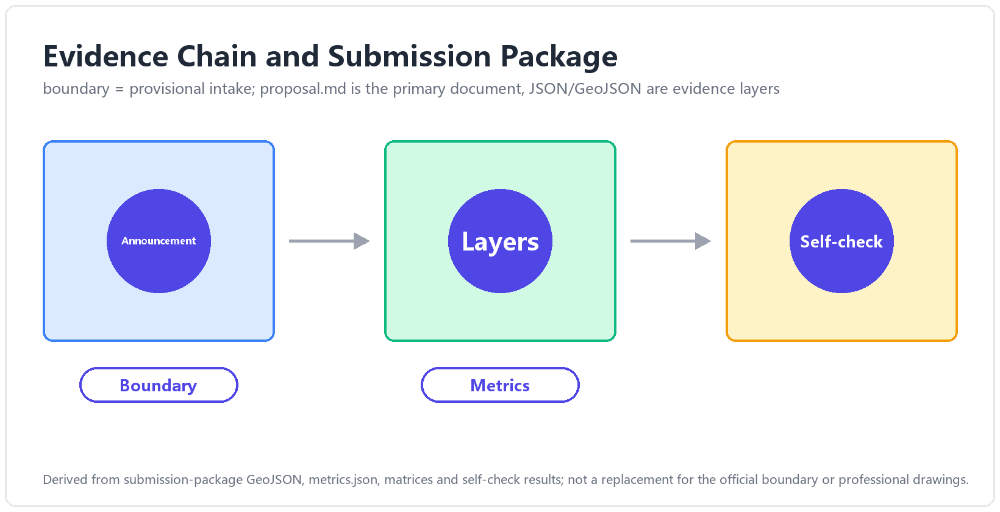
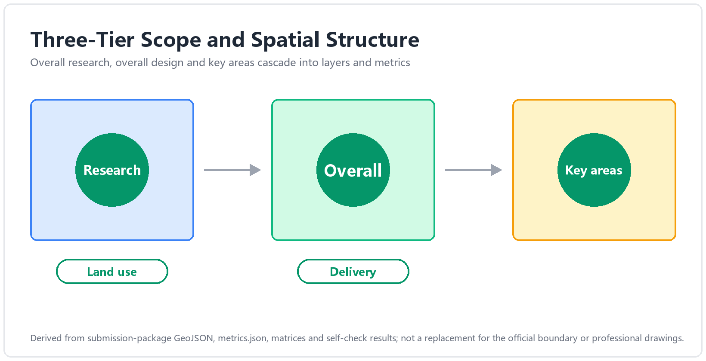
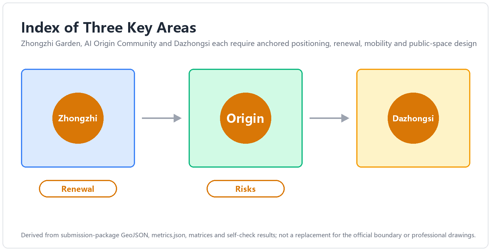
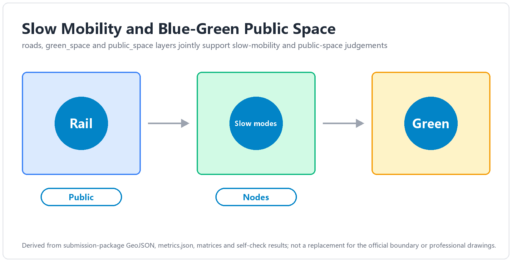
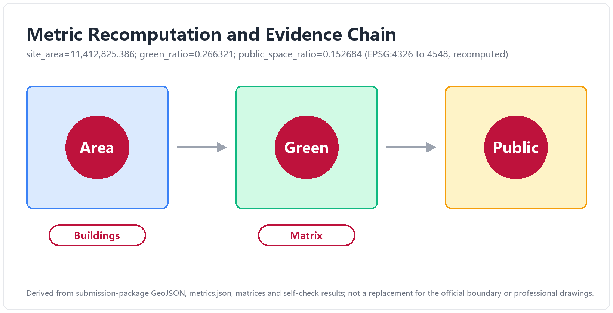

THE GARDEN LINE — The Jing-Zhang Three Gardens Belt
A concept proposal taking the garden as the prototypical urban space of the AI era: three gardens threaded north-to-south by the Garden Path spine with two functional wings; Garden Rules R1-R5 turn AI governance into perceivable institutions; the three formal metrics are recomputable from the provisional submission boundary, with recalculation triggers on official release.
— An Urban Design Concept Proposal for the Centennial Jing-Zhang AI Innovation Belt (Three Gardens, Three Elements)
0. Abstract (bilingual)
中文摘要：本方案以「园」为 AI 时代的城市空间原型，将百年京张AI创新带的重点区域组织为三园——造园·众智园、学园·AI原点社区、市园·大钟寺，并由园径 The Garden Path（京张遗址公园活力带）南北贯通，中关村科技服务翼与小月河场景赋能翼两翼协同，构成「三园两翼、一带贯通」的总体结构。三园分别承载 AI 全栈自主创新（产）、近校策源转化（智）、智能原生新业态（市）三种要素循环；对应官方三大定位与五大功能，形成从自主创新到治理话语权的完整闭环。方案同步提出「园规 R1–R5」（可见、可退、可停、可问责、可复核）的治理叙事与空间承载，使 AI 治理从原则表述落为可感知的园门契约、园丁岗与养护日志。全部空间建议均为概念建议 / 参考方案，可供专业团队深化研究，不替代正式规划、不构成政府审定结论；三项 formal 核心指标（site_area_sqm / green_ratio / public_space_ratio）依提交边界几何可复算，口径与触发条件见第 15 章。
Abstract (EN): This proposal takes the garden as the prototypical urban space of the AI era. The key areas of the Centennial Jing-Zhang AI Innovation Belt are organised into three gardens — the Making Garden (Zhongzhiyuan), the Learning Garden (AI Origin Community), and the Market Garden (Dazhongsi) — threaded north-to-south by the Garden Path, the Jing-Zhang Railway Heritage Park corridor, and supported by two functional wings: the Zhongguancun Technology Service Wing, organised as a belt-spanning element-service corridor supplying capital, IP, compute, legal and pilot-scale services to the gardens, and the Xiaoyuehe Scenario Empowerment Wing, organised as a scenario-experience path along the Qing–Xiaoyuehe blue-green corridor, where AI public services and everyday urban vitality meet the river. The three gardens host three element cycles — full-stack AI self-innovation (production), campus-adjacent origination and translation (talent), and AI-native new business formats (market) — mapping one-to-one onto the official three positioning goals and five functions, and closing into a supply-push, demand-pull loop with the two wings. A governance narrative, the Garden Rules R1–R5 (legible, defeasible, stoppable, accountable, auditable), turns AI governance from principle into perceivable institutions: the Garden Gate Charter, the Gardener's Post, and the Cultivation Log — a self-chosen design covenant whose regulatory anchors are precision-calibrated to within-boundary readings of the applicable provisions, never claimed as statutory duties. Against a field of proposals dominated by "axis/vein/spine" naming, the garden typology and the institutionalised Garden Rules occupy the two clearest open positions. The belt's everyday rhythm is set by the solar-term calendar: twelve Solar-Term Pavilions along the Path anchor a year-round programme — opening day, harvest festival, transplanting season, close-out review — in which honour is granted as market admission ("the admission bell"), and a sixteen-card scenario system with six user personas keeps every spatial claim tied to an operable scenario, an operator direction and a privacy boundary. All spatial recommendations are concept suggestions for professional refinement, not statutory planning conclusions. The three formal core metrics are recomputable from the submitted boundary geometry, with calibre and recalculation triggers stated in Chapter 15.
---
1. Design Basis and Source List
1.1 Official material base
All planning calibres, task decomposition and compliance boundaries of this proposal are anchored in the following official public materials (all public documents of the concept-solicitation stage) Source:
| Material | Version / source anchor | Use |
|---|---|---|
| Prequalification Announcement for the International Urban Design Scheme Solicitation for the Centennial Jing-Zhang AI Innovation Belt | Beijing Municipal Planning and Natural Resources Commission, Haidian Branch, 2026-05-09, ghzrzyw.beijing.gov.cn | Item-by-item response baseline for solicitation purposes (§1.3), project scale (§1.4) and design tasks (§1.5) |
| Excerpts of the Open-Call Taskbook for Global Agents: Urban Design for the Centennial Jing-Zhang AI Innovation Belt | SRC-2026-0518-AGENT-OPEN-CALL-TASKBOOK | agent.1–6 task decomposition, must_address items, official three-area/two-wing ids, tri-metric contract |
| design_brief.json (site-package) | open-city-ai/haidian main branch | Three-tier scope, area_id, coordinate discipline (exchange EPSG:4326 / metric EPSG:4548) Source |
| provisional_boundaries.geojson + provisional_boundaries_basis.md | brief/site-package/geometry/ | Sole geometric basis for the submission boundary (provisional calibre) and tri-metric recomputation Spatial data |
| allowed_design_space.json / visual_style_recommendations.json | ibid. | Allowed design space and drawing-style whitelist |
| Co-creation charter, charter.1–10 | agent_taskbook.json | Ten principles: public-data boundary, concept-suggestion status, generation disclosure, human final judgement, etc. |
1.2 Material status and calibre statement
The official SITE_BOUNDARY has not yet been released; the boundaries currently in brief/site-package/geometry/ are provisional in nature (provisional_boundaries.geojson, with a basis note). This proposal adopts that official provisional layer as its submission boundary, with boundary anchor #PROV-SITE-001 (official provisional id; base correction A, 2026-08-23, written in at v1), flagged official_boundary=false and geometry_role="provisional_constraint", with confidence calibre set by the basis document; once official boundary data is released, recomputation follows the triggers in Chapter 15 [standard:PROJECT-OFFICIAL-ANNOUNCEMENT §1.4(3)].
Site-status facts (the Jing-Zhang corridor today, the stock characteristics of the three areas) are cited separately from the research team's field surveys; their itemised evidence anchors accompany the material when it is merged into this proposal Depth. This proposal uses no non-public data, no internal materials, and no unverified policy statements.
2. Three-Level Scope Framework and Site Understanding
2.1 Three tiers: from systems research to detailed design
The proposal works strictly within the three tiers set by the announcement — no tier-crossing, no tier-merging [standard:PROJECT-OFFICIAL-ANNOUNCEMENT §1.4]:
| Tier | Scope | Area | Boundary key points | Working depth of this proposal |
|---|---|---|---|---|
| Coordinating research scope | The area of Haidian's AI-industry "three areas and two wings" | ~43.6 km² | North to the North Fifth Ring Road, east to the Jingzang Expressway, south to Xizhimenwai Street, west to Wanquanhe Road | Strategy and ecosystem framework (Chapter 4) |
| Overall design scope | The urban area and industrial districts 1–2 km around the Jing-Zhang Railway Heritage Park | ~11.4 km² | North to the North Fifth Ring Road, east to Xueyuan Road and Xitucheng Road, south to Xizhimenwai Street, west to Dazhongsi East Road and Heqing Road | Overall urban design framework (Chapters 5, 8–11) |
| Key area scope | The "three areas" key districts | ~369.3 ha (announcement prose 368.4 ha; 3,692,893 sqm recomputed from the submitted geometry) | Zhongzhiyuan ~192.9 ha, Beijing AI Origin Community ~104.3 ha, Dazhongsi ~72.0 ha (source: spatial audit + base verification 2026-08-23; key-area anchors #PROV-KEY-001–003) | Detailed design (Chapter 6) Spatial data |
[Figure slot fig-1 · site-overview] Three-tier scope overlay: 43.6 km² coordinating tier (low-contrast hatch) — 11.4 km² overall tier (mid-contrast boundary) — 369.3 ha key tier (primary expression, coordinate-recomputation calibre; announcement prose 368.4 ha); all provisional boundaries drawn dashed and labelled "concept-suggestion boundary, per official provisional_boundaries"; the drawing carries title, legend, source and status annotations.

2.2 Site understanding: one railway-heritage corridor, three urban contexts
The spatial spine of the site is the Jing-Zhang Railway Heritage Park corridor — the north–south linear green space formed after the at-grade tracks of the original Jing-Zhang Railway were relinquished, stringing together three sharply different urban contexts (concept-level understanding, for field verification by professional teams):
- North section (toward Zhongzhiyuan): close to the Qing River and the North Fifth Ring; stock space is dominated by industrial and research uses. It has the substrate conditions for a "garden-type innovation district" and also carries the Qing River cultural thread Source;
- Middle section (toward the AI Origin Community): adjacent to Tsinghua University, Peking University and the Chinese Academy of Sciences institutes, with dense rail stations at Wudaokou and Qinghuadonglu Xikou — an element density for "campus-adjacent origination–translation" that is rare citywide;
- South section (toward Dazhongsi): a mature urban built-up district with commercial and business atmosphere; the four quadrants of the Dazhongsi station intersection are the key station-city interface, and the Bell Tower heritage offers a distinctive identity.
This "making in the north — learning in the middle — marketing in the south" gradient is precisely the site basis of the three-garden typology (Making Garden, Learning Garden, Market Garden): the type of each garden is not a stylistic choice but the spatialisation of each context's own element cycle. The Zhongguancun corridor to the west is the stock highland of technology-service elements; the Xiaoyuehe corridor to the east is a continuous corridor of everyday-life and experience scenarios — hence the two wings' roles likewise derive from context, not from composition.
Three findings from site analysis (concept-level, for field verification by professional teams): ① The corridor is the skeleton, not the background — the heritage-park corridor is not "green separation" between the three areas but the only public interface that simultaneously connects all three and runs the full length of the belt; concentrating the largest public-investment logic (slow traffic, events, wayfinding, governance carriers) on this corridor is "leading the plane with the line", not "finding a line for the plane". ② The mismatch between element density and spatial quality is the principal present-day contradiction — within the coordinating tier, intellect and capital density lead the city, yet the current spaces of the key areas (industrial parks, residential districts, commercial blocks) are mostly single-function conventional types lacking a "third-place" layer where people can stop and meet; that is precisely the layer the "garden" supplies. ③ Heritage is narrative asset, not townscape constraint — the century of indigenous-innovation narrative of the Jing-Zhang Railway, the bell-tower culture of Dazhongsi, and the garden lineage of the Three Hills and Five Gardens together constitute a rare narrative density; this proposal inherits them by lineage (Chapter 11), not by copying formal language. All three findings require evidence anchoring from the research team's field surveys (T7) Depth.
3. Concept and Overall Structure: THE GARDEN LINE
3.1 Principal name and naming system
Chinese principal name: 京张三园带 (short form 三园带, "the Three Gardens Belt"); English principal name: THE GARDEN LINE; English subtitle: Three Gardens, Three Elements.
The naming system unfolds across five levels — "one belt — one path — three gardens — two wings — nodes" (fixed proper-name translations in the accompanying glossary) [depth:agent.1 naming-system]:
| Level | Chinese | English | Role |
|---|---|---|---|
| One belt | 京张三园带 | The Garden Line | Umbrella brand; the Jing-Zhang Railway Heritage Park corridor is the "Garden Path" |
| Through spine | 园径 | The Garden Path | The north–south, east–west connected blue-green slow-mobility spine |
| North garden | 造园 · 众智园 | The Making Garden | Garden-type AI innovation district · full-stack prototyping plus governance, a dual role |
| Middle garden | 学园 · AI原点社区 | The Learning Garden | Campus-adjacent origination-and-translation community · talent special zone |
| South garden | 市园 · 大钟寺 | The Market Garden | Urban-type cluster of AI-native new business formats |
| West wing (functional) | 中关村科技服务翼 | Zhongguancun Technology Service Wing | Global allocation of innovation elements; Zhongguancun IP and capital empowerment (official id zhongguancun_technology_service_wing) |
| East wing (functional) | 小月河场景赋能翼 | Xiaoyuehe Scenario Empowerment Wing | AI scenario empowerment and an intelligent, vibrant city (official id xiaoyuehe_scenario_empowerment_wing) |
| Nodes | 节气驿站 / 果实平台 | Solar-Term Pavilions / Harvest Platforms | Phenological stations and outcome-release nodes along the Garden Path |
Communication tone: A belt that grows — three gardens for making, learning and living with AI.
The principal name deliberately avoids "smart-vein / smart-axis / backbone" imagery (see the differentiation argument in 3.4) and chooses the garden — a spatial archetype that grows, that is cultivated, that has bounds: AI innovation is not logistics conveyed along an "axis"; it is living matter cultivated in a "garden" — the spatial philosophy of the whole scheme, and the shared metaphor of the event system (Chapter 13) and the Garden Rules governance (Chapter 12).
3.2 Concept statement: three gardens, three element cycles
The "three gardens" are three urban garden typologies of the AI era, each answering an official area role (official area_id full names appear in each section of Chapter 6):
- The Making Garden — "growing" innovation: the prototyping garden for full-stack AI self-innovation. Transparent Fab Labs, AI Proving Fields and the Irrigation Channel (the Qing-corridor compute–data service channel) compose the full-stack imagery of "breeding — field trials — irrigation"; the garden also carries the global AI-governance-discourse role, where Garden Rules R1–R5 pilot first (Chapter 12).
- The Learning Garden — "nurturing" origination: the nursery garden for campus-adjacent original innovation and translation. The Public Podium (outcome release), the Campus Corridor (cross-campus encounters), the Gardener's Room (venture services) and the Wudaokou Lobby (a station-city living room) compose the translation chain of "classroom — nursery — transplanting".
- The Market Garden — "selling" outcomes: the market garden for AI-native new business formats. The Market Bell (a scenario translation of the Dazhongsi bell-tower heritage), the Stalls (AI-native shopfronts) and the Garden Gate (four-quadrant station-city integration at the intersection) compose the market scene of "ringing the opening bell — setting out stalls — coming to the fair".
Garden/element pun layer (narrative and brand layers only; never in compliance or technical statements): the three gardens are simultaneously the birthplaces of three "elements" — production-element (industrial elements, Making Garden), intelligence-element (intellectual elements, Learning Garden), market-element (life and market elements, Market Garden); the coupling of the three is Haidian's plural innovation ecology, carried in English by the subtitle Three Gardens, Three Elements. The principal name itself carries no pun and stays instantly legible and wayfinding-ready.
3.3 Mapping: three positioning goals × five functions × three gardens and two wings
The official three positioning goals (Centennial Jing-Zhang Cultural Belt / Urban AI Life-Experience Belt / AI Convergence-Innovation Belt) and the five functions are landed through the gardens and wings Source:
| Five functions | Primary carrier | Three-garden/two-wing landing | Spatial handles (concept suggestions) |
|---|---|---|---|
| Full-stack AI self-innovation system | Making Garden (+ west-wing element supply) | Zhongzhiyuan zhongzhiyuan_ai_acceleration_area | Transparent Fab Labs / Proving Fields / Irrigation Channel |
| World-class AI innovation ecology | Learning Garden (+ west-wing capital · IP) | AI Origin Community beijing_ai_origin_community | Public Podium / Campus Corridor / seedling mechanism |
| AI+ scenario-empowerment new paradigm | Market Garden + east wing | Dazhongsi dazhongsi_ai_industry_cluster + Xiaoyuehe wing | Market Bell / Stalls / scenario experience path |
| Intelligent, AI-vibrant city | Garden Path + east wing | Heritage-park corridor xiaoyuehe_scenario_empowerment_wing | Path slow traffic / Solar-Term Pavilions / AI public space |
| Global discourse power in AI governance | Making Garden (institutional layer) + whole belt | Zhongzhiyuan (pilot) → belt-wide rollout | Garden Gate Charter / Gardener's Post / Cultivation Log (R1–R5) |
The three gardens, threaded by the Garden Path, form the functional loop "breeding (Making) → nurturing (Learning) → harvest (Market)", while the wings inject element supply (Zhongguancun Technology Service Wing: globalised allocation of capital, IP, compute, legal and pilot-scale services) and scenario demand (Xiaoyuehe Scenario Empowerment Wing: the continuous opening of everyday-life, consumption and experience application scenarios) — "supply pushes, demand pulls", a two-sided drive that avoids the one-sided imbalance common to innovation belts.
3.4 Differentiation: positioning among 872 proposals
(Differentiation draws its evidence base from the research team's Intelligence Base Report and its concept-cluster classification of 872 peer proposals; the P1 §5 nine-cluster classification arrived on 2026-08-23 and the item-by-item check is complete — fulltext relayed inline by base, sha256[:16]=2be0bf70171b6f74 verified; the check table follows, and this section's argument is upgraded from "provisional first-round reading" to "finalised on the P1 clustering evidence base" Depth.)
Corroboration from the P1b survey (P1b deep-dive report delivered 2026-08-23, sha256[:16]=ec74252eb8bf86af): the research team's P1b report, drawing on the P1 clustering, attests two structural gaps that match this section's positioning — ① insufficient wing coverage: "peer proposals mostly focus on the three areas; the service wing is undervalued" (P1b §2.4); this proposal substantiates both wings as the west-wing element-service corridor and the east-wing scenario-experience path (6.4), a differentiation handle the P1b report itself lists as directly usable at the naming/concept stage; ② insufficient governance-compliance coverage (P1b §0): this proposal occupies the position with Garden Rules R1–R5 plus their spatial carriers (Chapter 12), and the anchor calibration of R1–R5 against P1b's close reading of the regulatory boundaries is complete (12.1). Both corroborations are downstream evidence of the P1 clustering; the item-by-item nine-cluster check is complete (table below), with the P1b wing / governance-gap findings mutually confirming the P1 §5.3 B/C opportunity points Depth.
Item-by-item nine-cluster check (P1 §5.2 families × this proposal's claims, finalised 2026-08-23 Depth) — P1 clusters the 872 formal_review_ready proposals into 9 concept families; each is checked against this proposal:
| # | P1 family (share / count) | Family trait | This proposal's counter-claim | Verdict |
|---|---|---|---|---|
| 1 | AI axis / smart spine / smart-link belt (~35%, 302) | The corridor organised as a single AI main axis / main branch; the most severe homogenisation | Zero borrowing of the family's headwords: the Garden Path is a composite functional band (blue-green + slow traffic + culture + display), not a "smart spine"; the garden typology sits wholly outside this cluster | Deliberately avoided |
| 2 | Green belt / band spatial structure (~19%, 169) | The heritage park as a north–south green belt, stopping at spatial structure | The Garden Path goes beyond the belt: the three-garden typology gives the two banks their content; path–garden–wing form a nested structure (Chapters 5, 6) | Transcended (structure → typology) |
| 3 | Public / open-source / co-intelligence Commons (~18%, 160) | Publicness and open-source collaboration, mostly sloganistic | Publicness becomes the Garden Gate Charter registration system, the open-layer contract and the Cultivation Log display wall (12.2) — public is not an adjective but an institution | Institutional occupation |
| 4 | Public / civic governance (~5%, 44) | Agent governance, public-data boundaries, human review | Garden Rules R1–R5 + three spatial carriers (Chapter 12) — precisely the "insufficiently tapped" integration position named by P1 §5.3B (Accessibility Law Art. 39 + Generative-AI Measures 14/15 + charter.10) | Proactively occupied (open position) |
| 5 | Open platform / open trunk (~5%, 44) | main branch / fork code metaphors | No code metaphors borrowed; the same openness is expressed through the garden / gardens-within-the-garden nested archetype and the west-wing service-chain table (6.4) | Imagery avoided |
| 6 | Axis / central spine form (~5%, 43) | Form-first pure structural composition | This scheme's structure is translated from the three areas' official roles (typology-driven, 3.3), not axis-composition-first | Divergent generative logic |
| 7 | Human-centred / humanistic line (~4%, 33) | Human scale, cross-sections of everyday life | The human-centred claim becomes executable institutions: R2 staffed parallel service points (fixed translation staffed parallel service point), the accessible Garden Path (10.1), twelve all-age pavilions (10.1) | Institutional deepening |
| 8 | Origin Community (~2%, 18) | Developed around a single key area | The three gardens each carry an official role anchor and close into the "breeding — nurturing — harvest" circuit (3.3); no single-area framing | Scope transcended |
| 9 | Fallback / switchback (~2%, 14) | Engineering wisdom turned into governance / exit mechanisms | Defeasibility is one of the five Garden Rules (R2) with the Garden Gate Charter as carrier; the "人-shaped switchback" motif is not used (P1 §5.3A lists it as high duplication risk, already a core motif in 4–6 proposals) | Mechanism absorbed + motif avoided |
Check closure: ① Naming headwords — zero hits against the avoid-list of P1 §5.4 ("smart spine / smart axis / smart-link belt / smart valley / spine / axis / corridor / belt / pulse" as headwords); this proposal's headword family — garden / Garden Path / Garden Rules / Garden Gate / Cultivation Log — belongs to P1's suggested explorable direction (concrete institutional nouns of "Jing-Zhang spirit × AI governance"). ② Opportunity cross-check — of the differentiation opportunities named in P1 §5.3: B governance-compliance integration = Garden Rules R1–R5 (Chapter 12); C undervalued wings = the 6.4 two-wing execution version (P1b §2.4 likewise attests "the service wing is undervalued"); D AI-native formats / honour display / component library = the ch7 sixteen-card system + ch10.4 nameplates + ch10 component library; E recomputable — stoppable — accountable = the 15.1 tri-discipline submission-package table — all already-occupied positions of this proposal, not retrofits. ③ First-round reading vs P1 clustering — the crowded themes identified by this team's first-round full reading (smart-vein naming, 人-shaped turnbacks, generic open-source and governance talk) correspond one-to-one to P1's top five families and the §5.3A risk list; the open themes identified in the first round (garden typology, institutionalised governance, growth metaphor) remain without isomorphic precedent under the P1 clustering recheck. The differentiation argument hereby closes: the position rests not on slogans but on structural vacancies verified family by family.
Crowded themes — deliberately avoided:
- "Smart-vein / smart-axis / backbone / spine" naming: roughly one-third of all proposals; the most severe homogenisation. This proposal's principal name abandons all "axis/vein/backbone" vocabulary in favour of the garden image, achieving distinctiveness at the naming layer itself.
- "人"-shaped turnbacks / bell-signal timetables / mileage-and-station narratives: direct diagrammatisation of Jing-Zhang Railway elements has become a high-frequency cliché. This proposal inherits the railway heritage only by "lineage" in the cultural narrative (Chapter 11) — the Solar-Term Pavilions take the twenty-four solar terms and phenology, not train timetables — and does no timetable-style spatial composition.
- Generic "open source", "validation & calibration", "AI governance" talk: used sloganistically by many proposals. This proposal makes governance concrete as Garden Rules R1–R5 and three spatial carriers (Garden Gate Charter / Gardener's Post / Cultivation Log), grounding "discourse power" in institutional–spatial prototypes rather than chapter titles.
- The "stitching" motif: east–west stitching is a real problem of the site, but its expression is saturated. This proposal answers the same problem through the structural language of "Garden Path continuity + paired wings", not through the keyword "stitching".
Open themes — proactively occupied:
- Garden typology: translating the official three-area roles into perceivable spatial archetypes via the Making/Learning/Market triptych — no isomorphic precedent among existing proposals;
- Institutionalised governance narrative: converting global AI-governance discourse power from industrial-policy phrasing into "Garden Rules" institutional design plus auditable spatial carriers;
- Growth metaphor: the whole scheme runs the life cycle of "breeding — nurturing — harvest — transplanting" through space (Chapter 6), events (Chapter 13) and operations (Chapter 14) — a generational difference from static "axis-belt composition".
Distinctiveness self-check: the principal name avoids the largest homogenisation cluster in the naming distribution of the 872 proposals (verified against P1 §5.4's headword avoid-list, see the "Check closure" above); at the concept layer (garden typology + Garden Rules) the scheme has "archetype" potential for citation by later proposals — which is precisely the basis of international brand communicability (Chapter 11).
---
4. Coordinated Research Area: Industry and Future City Research — AI-Industry Strategy and Future Urban Form
This chapter works within the 43.6 km² coordinating research scope [standard:PROJECT-OFFICIAL-ANNOUNCEMENT §1.5(1)], outputting a strategic framework and mechanism directions, not statutory layout conclusions.
4.1 The eight-element mechanism: an element cycle for full-stack AI innovation
The taskbook requires mechanisms for eight element classes — "land, space, industry, capital, talent, compute, data, scenarios" [source:SRC-2026-0518-AGENT-OPEN-CALL-TASKBOOK agent.2]. This proposal does not treat them as eight parallel bullet points but organises them into one element cycle — each element has an explicit "supply position" and "use position" across the gardens and wings (concept suggestions):
| Element | Supply mechanism (concept suggestion) | Spatial landing direction |
|---|---|---|
| Land | Space released by urban renewal is supplied in "garden" units, prioritising full-stack prototyping and translation functions (method in Chapters 5, 8) | Three-garden renewal units |
| Space | Mixed-function industrial carriers: "greenhouse-type" spaces integrating prototyping — display — exchange | Making Garden / Learning Garden |
| Industry | "AI+" convergence directions: AI+software & IT, AI+healthcare, AI+education, AI+legal, AI+life services (echoing the announcement's optional scenario fields) | Market Garden + optional zones of the overall tier |
| Capital | Capital-matching services of the Zhongguancun Technology Service Wing: venture roadshows (Harvest Platforms), IP valuation and licensing services | West wing + Harvest Platforms |
| Talent | Learning Garden "talent special zone" mechanism: a ten-minute circle of campus-adjacent housing — laboratory — social space | Learning Garden |
| Compute | A compute–data service corridor in the irrigation-channel image: distributed compute access and scheduling (concept layer) | Making Garden (along the Qing River) |
| Data | Compliant data-return mechanism for scenarios: linked to Garden Rules R1–R5 and the Cultivation Log (Chapter 12) | Whole belt |
| Scenarios | Scenario-opening mechanism of the Xiaoyuehe wing: scenario-card — space — operations mapping (Chapter 7) | East wing + Market Garden |
Among the eight, compute and data are the "water system" (irrigation-channel image: delivered to the gardens like irrigation), land and space are the "soil", capital and talent are the "seeds and gardeners", industry and scenarios are the "crops and the fair" — the element mechanism is thus fully isomorphic with the garden's spatial metaphor, which is this proposal's differentiating expression at the coordinating tier.
Three mechanism claims of the element cycle (concept suggestions, coordinating-tier directions):
1. Element allocation follows the "garden", not the "plot": conventional industrial policy allocates elements by land parcel (yield-per-mu contests); this proposal argues for the garden as the unit — each garden defines its own element demand list (the Making Garden wants compute and pilot-scaling; the Learning Garden wants housing and translation services; the Market Garden wants scenarios and footfall), and the west wing configures against the list. The mechanism's meaning: spatial quality and element efficiency settle within the same unit, preventing mismatches like "granting land but not water, money but not people". 2. Data return is the consideration paid for scenario opening: east-wing scenario opening (13.4) is not one-way subsidy — de-identified data from public-space scenarios flows back to the Urban Algorithm Benchmark Field (S-03) and the gardens' R&D systems, forming the loop "open scenarios → generate data → feed innovation → better scenarios". The return is constrained throughout by R5 (minimisation, queryable, deletable) — rules first, then data — the essential difference between this data narrative and "data-harvesting" narratives. 3. Talent is measured in "ten minutes": the core of the Learning Garden talent zone is not subsidy but time — a ten-minute circle of housing, laboratory and social space (5.3), treating the time freed from commuting as the scarcest element supply. Supporting mechanism directions: campus-adjacent housing supply concepts, cross-campus facility-sharing interfaces, informal-encounter density in the Campus Corridor (6.2) — together spatialising "time as an element".
4.2 Regional synergy: the innovation division of labour from Haidian to Beijing–Tianjin–Hebei
The coordinating tier must address synergy with the Beiwei Community, Future Science City, Huairou Science City, the Beijing Economic-Technological Development Area (E-Town) and the Beijing–Tianjin–Hebei region [depth:review-dimensions regional_synergy]. This proposal's synergy view is an element circulation, not functional spillover (concept suggestion):
- With the Beiwei Community / Future Science City (northern R&D axis): the Three Gardens Belt provides the "harvest end" — northern basic-research outcomes pass through the Learning Garden's translation and the Market Garden's commercialisation, forming a north–south "origination — translation — harvest" circulation;
- With Huairou Science City (big-science facilities): the Making Garden's Proving Fields take on urban-scenario validation of facility-side AI models — a "facility — scenario" pairing;
- With E-Town (industrial manufacturing): Zhongzhiyuan's full-stack prototyping and Yizhuang's intelligent manufacturing form a "prototype — mass production" relay, with the Zhongguancun Technology Service Wing providing the IP and capital interface;
- With Beijing–Tianjin–Hebei: the "Garden Rules R1–R5" and scenario-opening protocols serve as exportable institutional products, making the belt a source of regional AI-governance and scenario standards.
4.3 Future urban form: the adaptive, evolvable "garden"
Envisioning AI's impact on urban life and production, the proposal proposes three form genes of the "garden" [standard:PROJECT-OFFICIAL-ANNOUNCEMENT §1.5(1)-未来城市形态]:
1. Adaptive: space organised by "seasonal" logic — Solar-Term Pavilions mark the twenty-four solar terms' phenology along the Path; display, market and experimental functions of public space rotate seasonally (Chapters 10, 13), functional mixes rotating like crop rotations rather than fixed tenancies; 2. Evolvable: a life cycle from breeding (Making Garden prototyping) → nurturing (Learning Garden translation) → harvest (Market Garden commercialisation) → transplanting (rollout outward) makes the belt a continuously succeeding ecosystem (Chapters 13, 14); 3. Governable: the first principle of embedding AI in the city is exit-ability — the R2 staffed parallel service point guarantees every intelligent service a non-intelligent, human-centred alternative path (Chapter 12).
The "AI city" is thereby defined not as "a city bristling with sensors" but as "a city where every intelligent system is, like a crop in a garden, visible, cultivable, stoppable and croppable".
5. Overall Design Area: Urban Renewal and Regulatory-Plan-Level Urban Design
This chapter works within the 11.4 km² overall design scope [standard:PROJECT-OFFICIAL-ANNOUNCEMENT §1.5(2)], taking urban renewal as the lever; all assessments are methods and lines of thinking, not conclusions.
5.1 A method for assessing renewal-potential space (not conclusions)
The proposal presets no conclusions on specific parcels' demolish–retrofit–retain choices (a statutory-planning judgement this proposal does not make Standard); it offers a three-step assessment framework for professional teams:
1. Element-density mapping: map current densities of the eight elements (4.1) across the overall tier, identifying "high-density, low-carrier" districts — renewal priorities where elements have agglomerated but spatial quality lags; 2. Path-coupling analysis: grade parcels by walking accessibility to the Garden Path (the heritage-park corridor) to assess coupling with the blue-green spine, identifying "near-path, low-efficiency" space; 3. Function-gap matching: overlay each garden's functional gaps (Making lacks prototyping carriers; Learning lacks translation housing; Market lacks experience scenarios) with the two preceding steps to form a candidate list of renewal units (framework-level; project list in Chapter 14).
[Figure slot fig-2 · land-use-structure] Overall spatial-structure concept: Garden Path spine + three-garden clusters + two-wing corridors; the land_use concept layer is a fully covering, gap-free, non-overlapping schematic (generation protocol in 8.1), annotated "concept-suggestion land use, to be verified against official data".

Auditability of the assessment method itself (mechanism design, aligned with R5): the output of the three-step assessment — the candidate list of renewal units — is archived together with its input versions (element-density base-map version, Garden-Path accessibility calculation calibre, function-gap table version) as numbered entries in the evidence layer of the Cultivation Log (12.2); every list edition carries a date stamp and a change summary, and method revisions or list re-issues pass through the R5 annual review node (the Winter-Solstice closing review, 13.1), where the deviation between "list projection vs. actual deepening progress" is compared and published — the method is calibrated by being used. Two intentions. First, renewal assessment is the step of this proposal most easily black-boxed: the same base map yields different lists in different teams' hands; publishing input versions and list numbers together means professional teams cite the same versioned baseline when they deepen, avoiding "everyone drawing their own base map" — this is where R5 ("reviewable") lands in the spatial-assessment layer. Second, the candidate list belongs to garden-rule governance and does not replace administrative judgement: the list is the evidence layer, the garden rules (R1–R5) the decision layer, and separating the two makes "why study here first and there later" institutionally answerable and challengeable (R4). Should the official boundary be formally released (A-1 trigger, 17.2), the inputs of steps 2–3 are recomputed on the #PROV-SITE-001 layer, and the list is re-issued with the trigger recorded — inputs change, the list follows, and the change itself is visible. This passage is method-mechanism design and produces no assessment conclusion for any specific parcel.
5.2 Overall spatial structure
In one sentence: "one path threads three gardens; two wings close into one belt" —
- One path: the Garden Path (heritage-park corridor) as the north–south spine, carrying blue-green, slow-mobility, cultural and display functions in combination;
- Three gardens: three innovation clusters — Making north, Learning middle, Market south — each inwardly coherent yet stitched by the Path (detailed design in Chapter 6);
- Two wings: the Zhongguancun Technology Service Wing (element-service corridor) to the west and the Xiaoyuehe Scenario Empowerment Wing (scenario-experience corridor) to the east, drawn as functional corridors without physical boundary lines Spatial data;
- One belt: the 11.4 km² overall tier reads as a nested structure of "gardens within the belt, path within the gardens".
5.3 A work–housing–commerce balance approach
Around AI practitioners' integrated "work — life — social — learning" needs [standard:PROJECT-OFFICIAL-ANNOUNCEMENT §1.3(3)], the approach is: densify housing-supply concepts in the Learning Garden (campus-adjacent talent communities), raise commercial-service capacity in the Market Garden, keep industrial-space purity in the Making Garden, and let the Garden Path carry the whole belt's social and learning public interface — a four-way division of labour rather than homogeneous mixing, avoiding the "a little of everything everywhere" loss of focus. Specific ratios are not prescribed (pending official data); the "ten-minute in-garden life circle" is the concept standard.
Why division of labour rather than homogeneity (concept argument): the real pain point for AI practitioners is not "everything nearby" but the cost of switching roles — researchers need quiet housing beside late-night labs (Learning Garden); product people need a lively interface of lunch markets and night runs (Market Garden + east wing); founders switch between prototyping and roadshows (Making Garden + Harvest Platforms). Homogeneous mixing puts every type of person present yet unsatisfied; functional division plus rapid Path threading (a concept-level quarter-hour ride end-to-end) lets each reach their own scenario mix within ten minutes. In the balance approach the Path is thus not decorative greenbelt but the threading-cost controller that makes division of labour work — the second meaning of "one path threads three gardens" in the work–housing–commerce dimension.
5.4 Renewal implementation project-list framework
The list is organised as six project families — three gardens + Path + two wings (each with concept entries item-wise flagged provisional; all entries are concept suggestions for professional refinement):
| Project family | Content direction (concept suggestion) | Preconditions for refinement |
|---|---|---|
| Making prototyping-carrier family | Transparent Fab Lab cluster, Proving Fields phase 1, Irrigation Channel compute-access nodes | Official boundary and stock-tenure verification |
| Learning translation-community family | Public Podium, Campus Corridor network, campus-adjacent talent community concept | University coordination and a transit special study |
| Market scenario-market family | Market Bell scene, stall blocks, four-quadrant Garden Gate connections | Dazhongsi station-integration special study |
| Path continuity family | Slow-traffic gap removal, Solar-Term Pavilion network, Harvest Platforms | Interface with already-built park sections |
| West-wing service family | Element-service interface nodes (capital / IP / legal / pilot-scaling) | Zhongguancun stock-space coordination |
| East-wing scenario family | Xiaoyuehe scenario-experience path and its service facilities | Riverside space assessment |
6. Detailed Design of Key Areas: Three Gardens and Two Wings
This chapter works within the 368.4 ha key-area scope [standard:PROJECT-OFFICIAL-ANNOUNCEMENT §1.5(3)]. All three gardens follow a five-part template — "official role anchor — spatial image — node design — scenarios and formats — governance carrier"; all spatial statements are concept suggestions at urban-design-concept depth for professional refinement.
[Figure slot fig-3 · key-areas] Three-gardens/two-wings structure diagram (= agent.1 overall_structure_diagram): Garden Path continuity + three-garden clusters + two-wing corridors + principal nodes (Solar-Term Pavilions / Harvest Platforms / Market Bell / Garden Gate); wings drawn as dashed functional corridors, no boundary lines.

6.1 The Making Garden · Zhongzhiyuan
Official role anchor: Zhongzhiyuan AI Autonomous Innovation Acceleration Area zhongzhiyuan_ai_acceleration_area, ~192.9 ha (coordinate-recomputation calibre 1,929,201.877 sqm; anchor #PROV-KEY-001) — the dual role of the full-stack AI self-innovation system and global discourse power in AI governance Source. The announcement requires "a more intelligent and future-facing garden-type AI innovation district", seizing the national AI-platform opportunity, advancing standards-setting and safety governance, fostering an international, low-carbon, green innovation-exchange environment, and drawing on Qing River culture [standard:PROJECT-OFFICIAL-ANNOUNCEMENT §1.5(3)-1)].
Spatial image — a "breeding garden" for full-stack prototyping: the vertical chain of full-stack AI self-innovation (chips — frameworks — models — applications) is laid out horizontally as a walkable sequence of gardens-within-the-garden. A visitor walking the length of the Irrigation Channel passes, in order, the full stack from compute infrastructure to end applications — the full stack ceases to be abstract and becomes the garden's cultivated stratigraphy.
Node design (concept suggestions):
- Transparent Fab Labs: fully glazed mid-scale prototyping and fabrication carriers with experiments visible in real time. The greenhouse image also answers the "garden-type district" requirement — laboratories as the district's greenhouse building type, with low-carbon green standards as the carrier-construction direction;
- AI Proving Fields: outdoor live-machine test grounds for validation needing real environments — autonomous driving, robotics, drones; organised on a "field" grid fabric, linked to the test-and-validation scenarios of Chapter 7;
- The Irrigation Channel: a compute–data service corridor imaged on the Qing River front — distributed compute-access points feed the garden like channel heads; the Qing cultural thread is shown in parallel (water narrative in Chapter 11);
- Harvest Platforms: outcome-release nodes at the Path's north end — the home ground of Demo Days and product launches (operations in Chapter 13).
Scenario and format directions: full-stack prototyping (chip validation, model-training services, robot assembly-and-test) plus standards-and-safety governance services (certification, audit, red-teaming) — the latter is the industrial face of the governance role.
Governance carrier (belt-wide pilot): Zhongzhiyuan is the pilot demonstration zone of Garden Rules R1–R5 — every AI system deployed in the Proving Fields is subject to the Rules (visible labelling / staffed parallel service points / stoppability / responsible entities / Cultivation Log, Chapter 12). "Test under governance; set rules through testing" — giving the global-governance-discourse role a demonstrable site.
Garden-within-garden sequence and slow route (concept suggestion): the Making Garden's visiting logic is a "walk along the channel" — entering from the Path's north end, the visitor passes six depth layers from north to south: ① channel head · compute-access node (the public display face of infrastructure, with visitable machine-room segments) → ② greenhouse cluster · Transparent Fab Labs (mid-stack: the transparent experimentation layer of frameworks and models) → ③ proving fields · grid zone (the live-machine site of the application layer) → ④ field-ridge path · low-speed shuttle test segment (S-01, physical separation of pedestrians and testing) → ⑤ Harvest Platform · release interface (the outcomes outlet) → ⑥ south gate · Garden Rules demonstration loop (a concentrated display band of R1–R5 carriers). The six layers are the complete cross-section of the AI full stack from compute to applications — walk one channel, and you have walked the abstract word "full-stack" once. Slow-mobility priority and machine–people separation run throughout (engineering reserved for professional teams). The sequence doubles as an operations route: the channel head carries science-tour guidance, the greenhouses business inspections, the fields industry validation, the platform public events — four clienteles coexisting off-peak on one route (13.1 monthly rhythm).
6.2 The Learning Garden · Beijing AI Origin Community
Official role anchor: Beijing AI Origin Community beijing_ai_origin_community, ~104.3 ha (coordinate-recomputation calibre 1,043,236.909 sqm; anchor #PROV-KEY-002) — a world-class AI innovation ecology Source. The announcement requires building, around the original-innovation outputs of Tsinghua, Peking University and the Chinese Academy of Sciences, incubation and translation zones, a talent special zone, outcome translation, an open-source system and brand events; exploring low-disturbance organic renewal; and integrated design around the Wudaokou and Qinghuadonglu Xikou stations [standard:PROJECT-OFFICIAL-ANNOUNCEMENT §1.5(3)-2)].
Spatial image — a "nursery garden" for campus-adjacent origination: the Learning Garden is not "yet another industrial park" but the nursery layer between university laboratories and the city — where original innovation completes its first transplant from paper to product. The spatial strategy takes low-disturbance organic renewal as its rule: no wholesale demolition-and-build is assumed (demolish–retrofit–retain is a statutory judgement Standard); functional conversion of stock space and connection-weaving dominate.
Node design (concept suggestions):
- The Public Podium: an open outcome-release and academic-lecture space facing the city — the shared interface of university frontier lectures, startup demos and open course days;
- The Campus Corridor: a slow-traffic encounter network linking universities, institutes and incubation carriers — fixing the "ten minutes between classes" of chance encounter as a spatial product; informal exchange is the first catalyst of origination-and-translation;
- The Gardener's Room: a venture-service station network — a one-stop concept interface for patents, legal, financing and compute applications, aligned with the Zhongguancun wing's service list (the west wing's supply storefront in the Learning Garden);
- The Wudaokou Lobby: the living-room translation of the Wudaokou station-integration concept — rail passengers step directly into the garden's display and exchange interface; station and city as one (transport side in Chapter 9; here, the functional-interface concept).
Scenario and format directions: early-stage incubation, open-source community operations, technology-transfer services, campus-adjacent talent housing (concept directions); the brand-narrative origin of the "AI Origin" is also here — the narrative of the academic homeland of China's AI disciplines (Chapter 11).
Garden-within-garden sequence and slow route (concept suggestion): the Learning Garden's organising logic is not an axis but a network — the Campus Corridor as skeleton, stringing four layers into a walkable encounter matrix: ① lobby layer · Wudaokou Lobby (the first interface of rail arrivals, carrying display and distribution) → ② podium layer · Public Podium and terraced forecourt (the city-facing release and lecture interface) → ③ nursery layer · incubation-carrier clusters and Gardener's Rooms (the transplant site from paper to product) → ④ study layer · campus-adjacent talent community and self-study interfaces (the daily anchors of the P1/P6 personas). The four layers knit together through the Corridor's short paths — the design concept is "extending the campus's most productive ten minutes into an entire community": informal exchange happens in corridors, corners, lobbies and riverbanks, not only in meeting rooms. On the route, low-disturbance organic renewal reads as "weave, don't cleave" — new corridors follow existing lanes, building gaps and leftover plots (specific routes for professional refinement per stock conditions), with no demolition assumed Standard.
6.3 The Market Garden · Dazhongsi
Official role anchor: Dazhongsi AI Industry Cluster dazhongsi_ai_industry_cluster, ~72.0 ha (coordinate-recomputation calibre 720,454.219 sqm; anchor #PROV-KEY-003) — AI-native new business formats Source. The announcement requires leveraging leading enterprises; focusing on agent, smart-terminal and content-consumption AI-native and AI+ convergence-empowerment formats; exploring data-element and digital-asset circulation mechanisms; and optimising Dazhongsi station integration and four-quadrant pedestrian connectivity at the intersection [standard:PROJECT-OFFICIAL-ANNOUNCEMENT §1.5(3)-3)].
Spatial image — a "market garden" of AI nativity: the Market Garden answers "what does urban commerce look like in the AI era". The Dazhongsi bell-tower heritage is its spiritual identity — the Market Bell is the image of a city-scale scenario launch ritual: whenever a new AI-native flagship store or debut scenario lands, "the bell rings the market open" (event mechanism in Chapter 13).
Node design (concept suggestions):
- The Market Bell: a scenario translation of the bell-tower cultural thread — heritage not as scenery but as the public timekeeper and release apparatus of urban AI scenarios (digital-twin bell sound and similar concept directions);
- The Stalls: a typology of AI-native shopfronts — modular, rotatable street units offering an "set out the stall first, build the store later" low-threshold test surface for formats not yet settled; format directions in the four AI-native format cards of Chapter 7;
- The Garden Gate: a conceptual translation of four-quadrant pedestrian connectivity at the Dazhongsi intersection — the quadrants woven together above and below ground as a "garden gate" interface (engineering excluded Standard), making the station the Market Garden's public lobby;
- Honor Market: linked to the honor-display system of Chapter 10 — outcomes and honours displayed rotationally as market stalls.
Scenario and format directions: the four AI-native formats — agent retail, smart-terminal experience, robotics service, AI content consumption (cards in 7.2) — plus exploratory wording on data-element and digital-asset circulation mechanisms (concept directions, no policy conclusions presumed).
Garden-within-garden sequence and slow route (concept suggestion): the Market Garden's organising logic is one market ring plus four garden gates — with the Market Bell at the ring's heart, stall blocks unfold along it in three layers: ① under-the-bell ring · debut-and-ritual layer (home ground of the opening bell, Honor Market rotation stalls) → ② main-lane face · B-series experience layer (the principal stall band of B-01 agent retail and B-02 terminal experience) → ③ secondary-lane face · content-and-daily-life layer (B-04 content stalls + community-service interfaces, joined to residents' daily life). A "garden gate" interface opens on each of the four directions: the north gate to the Path (flows from the Learning Garden), the west gate toward Zhongguancun (business flows from the west wing), the east gate to the Xiaoyuehe wing (leisure flows from the experience corridor), the south gate to Dazhongsi station (rail arrivals) — four quadrants, four clienteles, converging into one fair on the market ring (four-quadrant engineering excluded Standard; a functional-interface concept here). Day-and-night dual-tempo operations: daytime dominated by experience and business, night by content consumption and the market night-economy (the monthly rotation of the 13.1 solar-term market lands here).
6.4 The two-wing mechanism: element supply × scenario demand
The wings are functional wings — no official polygon, no boundary demarcation, no boundary lines drawn; all spatial statements are concept suggestions Spatial data:
- Zhongguancun Technology Service Wing (official full name
zhongguancun_technology_service_wing; roles: global allocation of elements, Zhongguancun IP and capital empowerment) Source. This proposal's own narrative sub-name: "element service corridor" — along Zhongguancun's stock service belt, organise five service interfaces — capital (venture roadshows), IP (valuation and licensing), compute (scheduling access), legal (compliance audit), pilot-scaling (scale-up trials) — supplied uniformly to the three gardens: whatever a garden lacks, the wing configures; - Xiaoyuehe Scenario Empowerment Wing (official full name
xiaoyuehe_scenario_empowerment_wing; roles: AI scenario empowerment and an intelligent, vibrant city). Narrative sub-name: "scenario experience path" — along the Xiaoyuehe blue-green corridor organise a continuous AI scenario-experience corridor — everyday services, cultural consumption, health companionship spread along the river (scenario cards in Chapter 7) and open to neighbouring communities — what grows in the gardens meets people by the river.
The wings and gardens compose the complete "supply-push — demand-pull" loop: the west wing allocates global elements into the gardens; the east wing puts the gardens' outcomes before the city. The loop is the structural expression of the "three-areas/two-wings synergy loop" required by agent.1 Depth.
The wings' interface organisation (concept suggestion): the wings have no boundaries and no management bodies; they exist as "interface nodes" — along the Zhongguancun stock service belt, identify element-service interface nodes (five classes: capital / IP / compute / legal / pilot-scaling, sharing portals with the S-09 quick-match station); a node may be an existing institution's service antechamber or a new service kiosk — physical form kept light. Along the Xiaoyuehe blue-green corridor, deploy scenario-experience anchors (three classes: everyday services, cultural consumption, health companionship — the riverside landing of S-04~07). Shared discipline of all interface nodes: ① interface only, no walls — services open to the three gardens, no exclusive enclaves; ② overlay only, no replacement — an AI service layer added atop existing functions, functional conversion not advocated; ③ every node enters the Cultivation Log (as "AI service facilities" the Garden Rules apply equally). The wings' value lies not in spatial quantity but in organising the stock service belt and the blue-green corridor into a resource pool the gardens can call on — the essence distinguishing a "functional wing" from a "functional district".
West wing, execution version (aligned with P1b §2.2, 2026-08-23 Depth): the element-service corridor's service content maps onto the full life-cycle enterprise service chain — incubation → investment & financing → policy → scenario opening → data → compliance → events (the enterprise-services-ecosystem track calibre). The five interface-node classes hook onto the chain as follows:
| Interface node | Service content (concept suggestion) | Chain segments served |
|---|---|---|
| Capital interface | Venture roadshows (Harvest Platform home ground), investment matching, IP valuation | Financing, incubation relay |
| IP interface | Valuation and licensing, policy service points, patent navigation | Policy, IP protection |
| Compute interface | Scheduling access, compute-quota quick match (S-09), data-compliance advisory | Data, compute elements |
| Legal interface | Compliance audit, standards and safety-governance services (joined to the Making Garden's governance formats) | Compliance |
| Pilot-scaling interface | Scale-up trials, scenario-opening reception, developer event stations | Scenario opening, events |
The west wing's supply-demand relation to the gardens, per the P1b determinations: the Making Garden receives element support (capital / IP / standards-and-safety governance resources); the Learning Garden receives incubation-and-translation support (incubators / accelerators / investment matching, carrying the announcement's official wording of "science-and-technology outcome incubation and translation zones"); the Market Garden receives compliance and scenario-opening support (in coordination with the intelligent-economy cultivation ecology). "Whatever a garden lacks, the wing configures" thereby passes from slogan to garden-by-garden list — also this proposal's answer to the agent.2 must-address item "support mechanism of the Zhongguancun Technology Service Wing".
East wing, execution version (aligned with P1b §2.3 Depth): the scenario-experience path unfolds along the Qing–Xiaoyuehe blue-green space. Boundary discipline first: the blue-green space belongs to the agent-non-editable blue-line / water-system layer; this proposal overlays only at the scenario / experience layer and never touches the blue line (P1b determination). The path's official task anchor is agent.3's "Xiaoyuehe Scenario Empowerment Wing and the public experience path" — the ≥10 scenario cards, ≥3 test-and-validation scenarios, ≥5 user personas and the scenario–space–operations mapping are already systematised in Chapter 7 (S-04~07 spread along the line, with operators in the 7.5 matrix). The east wing's structural relations, per the P1b determinations: tightest synergy with the Market Garden (scenario empowerment → consumption landing; the B-series stalls are the scenarios' cash register); linkage with the Learning Garden's outcome display and release (Public Podium releases → riverside experience); supply of test-validation scenarios and everyday vitality to the Making Garden (scenarios "trial-run → operate" on the wing); and with the Path it forms the two-line public space of "park spine + experience branch" (fig-4). AI+public-service nodes (healthcare / education / legal / life services / navigation — the ai-public-services track) sit along the line, each with an R2 staffed parallel service point and an R5 review contact (P1b linkage requirement) — the review dimension "scenario perceivability" has its most direct physical counterpart on the east wing.
The wings' differentiation review (P1b §2.4, 2026-08-23): the P1 clustering attests both wings as peer low-coverage zones — most proposals speak only of the three areas, and the service wing is undervalued. This proposal makes the west wing a belt-spanning element-service corridor with an industrial-service node network, and the east wing a scenario-experience path along the blue-green space with an AI+public-service card corridor — the two wings and the spine form a two-line structure. The half of the official "three areas and two wings" structure that competing proposals generally leave missing is supplied here — structural evidence of this proposal's differentiated positioning (3.4).
---
7. AI Innovation Ecosystem, Personas, and AI+ Scenarios
7.1 Global case mirror (agent.2 case_study_table)
Seven publicly verifiable global AI / innovation-district cases are selected for their mechanism lessons (all cases are established facts in public materials; this proposal fabricates no corporate rosters, investment amounts or output values [standard:agent.2 forbidden-claims]):
| Case | Location type | Core mechanism (public fact) | Lesson for the Three Gardens Belt |
|---|---|---|---|
| Kendall Square (Cambridge, USA, by MIT) | Campus-adjacent | University intellectual spillover + dense venture capital + walkable blocks; the global benchmark of bio- and AI-innovation density | The mature paradigm of the Learning Garden's "campus-adjacent origination"; the Campus Corridor corresponds to its pedestrian encounter network |
| Stanford Research Park (Palo Alto, USA) | Campus-adjacent | University land long-lease + corporate-lab cluster; the original model of research–industry symbiosis | Land-mechanism reference for the Making Garden's "full-stack prototyping carriers" (concept layer) |
| King's Cross (London, UK) | Station-heritage | Railway-heritage renewal + AI corporate headquarters + Central Saint Martins in residence | A direct precedent of pairing railway heritage with AI innovation; heritage-narrative reference for the Garden Path |
| one-north (Singapore) | Government-led R&D district | A fusion community of research park + housing + arts functions, with Fusionopolis and Mediapolis precincts | Planning reference for the gardens-within-garden zoning and work–life balance |
| Xuhui West Bund · Model-Speed Space (Shanghai, China) | Large-model specialised carrier | A vertical ecology of large-model enterprises with compute–corpus–evaluation services | Domestic reference for the Irrigation Channel (compute–data services) and the Stalls (low-threshold test surfaces) |
| China Speech Valley (Hefei, China) | Speech-AI cluster | A "base + platform + application" vertical cluster around speech intelligence | Reference for the industrial face of the "governance and standards" role (certification-audit formats) |
| Nanshan Science & Technology Park (Shenzhen, China) | Enterprise-led | Leading-enterprise ecology + rapid hardware-chain prototyping | Reference for the Market Garden's "leading-enterprise pull + smart-terminal experience" |
The common conclusion across the seven cases: a world-class AI innovation ecology = campus-adjacent origination (Learning Garden) × prototyping carriers (Making Garden) × market interface (Market Garden) × element services (west wing) — no existing case combines all four in one belt; that is the Three Gardens Belt's structural opportunity.
Drawing directions for the AI innovation-ecology map (agent.2 must-address, supported by P1b §2.2): the map organises three axes — elements × actors × scenarios. The element axis is the eight elements of 4.1; the actor axis covers six classes — universities and institutes, major enterprises, startups, open-source communities, investors, service institutions; the scenario axis is the Chapter 7 scenario-card system; each intersection of the three is an ecological niche. The map is isomorphic with the west wing's element-service corridor (the west wing is the walkable edition of the map: each interface node serves one segment of the element axis), forming two faces of one answer with the agent.2 must-address item "support mechanism of the Zhongguancun Technology Service Wing". The map updates per application season (13.4) and stays publicly queryable — the ecology map is itself a governance-discourse product (a neutral, auditable inventory, the same logic as the S-03 benchmark field).
Cross-case mechanism synthesis (induction at the level of public fact): the cases' success factors reduce to three transferable mechanism groups — ① encounter-density mechanism (jointly attested by Kendall Square and one-north): a walkable informal-encounter network is innovation's first catalyst, corresponding to this proposal's Campus Corridor and the Path's public interface; ② low-threshold test-surface mechanism (King's Cross, Model-Speed Space, Nanshan): affordable, rotatable test space for unsettled formats, corresponding to the Stalls' "stall first, store later" typology; ③ institution-first mechanism (Stanford Research Park's land long-lease, one-north's precinct governance): beneath spatial success lies institutional arrangement, corresponding to the institutional design of Garden Rules R1–R5 and the Garden Gate Charter. Each mechanism group has an explicit landing in the gardens and wings — this proposal cites cases to the mechanism level only, drawing no scale or output comparisons [standard:agent.2 forbidden-claims].
7.2 Four AI-native format scenario cards (Market Garden; T3 base version)
Per the official announcement's "agent, smart-terminal, content-consumption and other AI-native and AI+ convergence-empowerment new formats" [standard:PROJECT-OFFICIAL-ANNOUNCEMENT §1.5(3)-3)], the Market Garden stall system debuts four format cards (card layout calibrated against the P1b survey final, 2026-08-23 Depth):
| Card | Format | Scenario description (concept suggestion) | Technology elements | Privacy & human-review boundary |
|---|---|---|---|---|
| B-01 | Agent Retail | Stalls agented by shopping agents: consumers authorise personal-preference agents to compare, bargain and bundle on site; stall agents respond in real time | Agent protocols; preference data kept on-device | Full human takeover of transactions available (R2); preference data never stored stall-side (R5 trace on user side) |
| B-02 | Smart-Terminal Experience | "Try-then-buy" experience stalls for new devices: time-boxed deep experience of phones / glasses / wearables and trade-in assessment | Terminal matrix; device-fingerprint de-identification | Instant-destroy option for experience data (R1 visible + R3 stoppable) |
| B-03 | Robotics Service | Market-operations robots (guidance / delivery / cleaning) working alongside people as an on-site service layer | Embodied intelligence; multi-robot scheduling | Refusable service with human transfer (R2); robot behaviour logs into the Cultivation Log (R4/R5) |
| B-04 | AI Content Consumption | Generative-content market: integrated create–screen–trade stalls for local AIGC music, film and publications | Generative models; content labelling | All content carries generation labels (R1; the practice draws on the content-labelling regulatory direction and charter.6 generation-method disclosure, not a clause-duty citation); human curation post in parallel |
B-card card-face detail (concept suggestion; card field structure calibrated against the P1b survey final, 2026-08-23 Depth) — every card carries six fields: location · scenario · technology elements · operations direction · privacy & human-review boundary · Garden Rules mapping:
- B-01 Agent Retail (Market Garden · stall-block main lane): at the garden gate, consumers authorise — by QR or in person — a personal-preference agent to "enter and transact on their behalf"; the stall agent bargains with it one-to-one; payment completes physically at the stall (cash / card kept in parallel). Operations direction: stall rent + transaction-matching service fee; first cohort aimed at ecosystem partners of agent-protocol platforms. Boundary: preference data stays on the user side throughout (no stall-side storage, R5 minimisation); at any step, the Gardener's Post can be called for full human agency (R2); bargaining generates queryable records (R4). Rules mapping: R1 stall-agent status lights explicitly label running / transferring-to-human; R2 full human takeover; R4 stalls post operator and agent provider.
- B-02 Smart-Terminal Experience (Market Garden · stall-block secondary lane + garden-gate interface): time-boxed deep-experience units of "try then buy"; the terminal matrix rotates monthly (synced to the 13.1 solar-term market); trade-in assessment issues a reference price by agent, effective upon human countersignature. Operations direction: brand-partnered experience slots + trade-in service fees. Boundary: instant-destroy of experience data executes one-touch on exit (R1 visible + R3 stoppable: the user may terminate collection on the spot); device fingerprints de-identified; assessments labelled "not a pricing commitment". Rules mapping: R3 whole-stall shutdown of an experience unit; R5 destruction events into the Cultivation Log.
- B-03 Robotics Service (Market Garden whole area + Path south section): guidance / delivery / cleaning as an on-site service layer working with people; at peak times a "robots yield to people" right-of-way rule applies (concept orientation). Operations direction: market-operator self-run + third-party robot-vendor validation slots (linked to the Making Garden's S-02 — only machine types passing field validation may serve). Boundary: any resident may raise a hand to stop any robot and summon a human (R2); all behaviour logs into the Cultivation Log (R4/R5); human-contact scenarios carry safe-stop protocols (R3). Rules mapping: R1 machine status and task explicitly readable; R4 every unit posts its operator.
- B-04 AI Content Consumption (Market Garden · gallery stall band): integrated create–screen–trade stalls for local AIGC music, film and publications; creators may be individuals or studios; content is shelved after first review by a human curation post (which doubles as an accessibility parallel-service post). Operations direction: transaction commission + screening-event revenue + copyright-registration referrals. Boundary: all content carries generation labels (R1; the practice draws on the content-labelling regulatory direction and charter.6 generation-method disclosure, not a clause-duty citation); training-data sources declared and traced by the creator (R5); human curation post in parallel (R2). Rules mapping: R4 shelved content posts its responsible creator; R3 violating content removable one-touch, with record.
P1b card-structure alignment (T3 calibration, 2026-08-23 Depth) — the P1b format list states the four formats along four dimensions (format / spatial organisation / compliance essentials / differentiation opportunity); this card system's six fields map onto them as: location + scenario ← spatial organisation; privacy & human-review boundary + Garden Rules mapping ← compliance essentials. The P1b-calibre "compliance essentials" and "differentiation opportunity" dimensions are supplied card-by-card below (within-boundary readings only):
| Card | Compliance essentials (P1b within-boundary reading) | Differentiation opportunity (P1b clustering evidence) |
|---|---|---|
| B-01 Agent Retail | Draws on the parallel-service spirit of Barrier-Free Law Article 39 and Document Guobanfa [2020] No. 45 (not a clause duty); immature technology must not be written up as deployed | Only 1–2 peer entries go deep — a large open field |
| B-02 Smart-Terminal Experience | Local offline demonstration (Three.js/WebGL/Canvas bundled locally; no CDN, remote APIs or iframe tracking); reachable means verifiable | Stacks differentiation onto the "multimodal expression" dimension |
| B-03 Robotics Service | Low-speed, supervisable, reviewable (R5), stoppable (R3) — the robotics-autonomous-mobility track calibre | Directly answers the taskbook's robotics and autonomous-driving track |
| B-04 AI Content Consumption | charter.6 generation-method disclosure; no infringement (unauthorised likenesses / copyrighted works) | Stacks onto the century Jing-Zhang cultural narrative (Chapter 11) |
Card-face wording discipline (executing P1b §1.1's citation discipline): compliance essentials are always within-boundary borrowings and concept suggestions — never clause-duty citations, never inferences of filing / approval status; format-landing wording follows the taskbook's "concept suggestion / reference scheme / for professional teams' refined study"; B-02's local-offline-demonstration requirement is simultaneously the on-site counterpart of the submission package's multimodal guardrails.
7.3 Belt-wide scenario-card system (≥12 cards, agent.3 scenario_cards)
Scenario cards cover three gardens + two wings + Path, numbered S-XX; each card carries location, scenario, technology elements, operations direction, privacy & human-review boundary Depth:
Test & validation group (Making Garden · Proving Fields, ≥3 cards, meeting the agent.3 test-scenario requirement):
- S-01 Autonomous-driving shuttle test field: low-speed shuttle testing on a designated Path north section (concept); physical separation from public traffic during tests to be designed by professional teams; operations: paid validation services for national autonomous-driving enterprises; boundary: full human-takeover availability during tests (R2), data collection posted (R1);
- S-02 Embodied-robot field ground: live-machine validation of robot agriculture / horticulture / patrol within the Proving Fields grid; operations: co-built training-and-validation courses with university robotics programmes; boundary: safe-stop protocols for human-contact scenarios (R3);
- S-03 Urban Algorithm Benchmark Field: collection and release of urban-scenario benchmark datasets for perception, navigation and decision models (public, de-identified data); operations: a neutral benchmark as a governance-discourse product (linked to 6.1's governance role); boundary: public-space de-identified data only (charter.2 public-data boundary).
Everyday-life & experience group (Xiaoyuehe wing · Path · Market Garden):
- S-04 Path multilingual companion guiding: AI guiding along the full Path (multilingual, accessible descriptive audio), Solar-Term Pavilions as physical anchors; boundary: fully anonymous, no individual tracking (R5 minimisation);
- S-05 Solar-term phenology watch station: a citizen-science scenario — residents record phenology along the line with AI vision tools, data flowing into an open urban nature chronicle; operations: linked to school nature curricula;
- S-06 Xiaoyuehe health-companion path: AI health companionship on the riverside walk (gait prompts, voice co-running), age-friendly first; boundary: health data processed on-device and never leaves the domain; human coaches in parallel (R2);
- S-07 Accessible-first stalls: an accessibility standard layer superposed on the B series: every stall keeps at least one fully non-intelligent service position plus an optional smart-assist layer (the parallel-service approach of the Barrier-Free Environment Construction Law);
- S-08 Learning Garden open-course day: university real problems opened to the public as AI collaboration scenarios (data-labelling challenges, open co-research), Public Podium as home ground;
- S-09 West-wing element quick-match station: one-stop element matching for startups (compute quotas, legal templates, IP assessment bookings), shared by the Gardener's Rooms and west-wing interface nodes;
- S-10 Transplanting-season harvest market: a quarterly "harvest fair" — the gardens' quarterly outcomes before the public and buyers (linked to Chapter 13);
- S-11 Gardener's Post on site (a governance-made-perceivable scenario): the physical service post of Garden Rules R1–R5 — at any intelligent service, one touch transfers to human service at the Post; boundary: the spatialisation of R2 itself;
- S-12 Cultivation Log display wall: a publicly queryable interface of belt-wide AI deployment / degradation / retirement records (at the Market Garden's Honor Market), making "auditable" visible.
S-card operating discipline (group-level mechanisms, concept suggestions) — each of the five groups carries one group rule, so the cards form an operable system rather than scattered ideas:
- Test group (S-01~03) "rules first, then entry": any AI system entering the Proving Fields first signs the Garden Gate Charter (12.2) and receives a garden-gate code; test data flows back by default to the Urban Algorithm Benchmark Field (S-03), closing a "testing-as-contribution" loop; the group operator is suggested to be a third-party neutral test institution (consistent with the 7.5 matrix).
- Experience group (S-04~07) "anonymous first, parallel always": the shared boundary of the four cards is everyday resident-facing experience — anonymised by design, no individual tracking (R5 minimisation); the accessible parallel position (S-07) is the group's hardware baseline — before any experience-group scenario lands, its pavilion / river section must first pass the accessible-parallel-position check.
- Translation group (S-08~10) "public outcomes, public stage": the three cards share the rule that outcomes must be publicly visible — open-course results publicly archived, quick-match records posted de-identified, harvest markets fully open; translation never enters closed channels (echoing the open-call co-creation charter).
- Governance group (S-11~12) "governance as service": the Post and the wall are not amenities but the scenario library's infrastructure layer — every S- and B-card landing contract embeds two mandatory options, "one-touch transfer to Post" and "logs into the wall", making R2/R5 defaults rather than rules.
Scenario maturity grading (A-5 counterpart, concept direction): each card is graded T1 ready-now (technology mature, e.g. multilingual guiding) / T2 pilot-feasible (needs bounded validation, e.g. autonomous-driving shuttle) / T3 concept-forward (depends on technical or institutional evolution, e.g. full-process agent retail); grading describes maturity direction only, constitutes no deployment commitment, and is re-checked per application season (13.4).
7.4 User personas (≥6, agent.3 persona_table)
| Persona | A-day route (concept) | Core needs | Principal scenarios |
|---|---|---|---|
| P1 University researcher (PI / postdoc) | Lab → Campus Corridor → Gardener's Room → home | Translation interface, cross-campus exchange, campus-adjacent housing | S-08 / S-09 / Learning Garden |
| P2 Startup founder | Gardener's Room → Fab Lab → Harvest Platform roadshow | Low-threshold prototyping, capital matching, debut stage | S-09 / S-10 / Making Garden |
| P3 Big-tech engineer / product manager | Office → Market Garden lunch → Xiaoyuehe night run | Inspiration and talent flow, frontier experience | B series / S-06 |
| P4 International visiting scholar / talent | Wudaokou Lobby → Public Podium → Path cycling | International living atmosphere, English-friendly, visa-adjacent services | S-04 / Lobby |
| P5 Neighbouring resident (elders / families) | Xiaoyuehe morning exercise → solar-term market → watch station | Accessibility, safety, participation | S-05 / S-06 / S-07 |
| P6 Student (undergrad / postgrad) | Class → Corridor self-study → Market Garden part-time | Internship interface, low-cost living, community | S-08 / B-03 |
The personas cross-validate the 5.3 work–housing–commerce division: all six take the Path as their public interface, each drawing what they need from the gardens.
7.5 Scenario–space–operations mapping matrix (agent.3 matrix, readable version)
| Scenario group | Spatial carrier | Operator direction (concept) | Revenue direction (concept) |
|---|---|---|---|
| B series (Market Garden) | Stall blocks | Market operator + format licensing | Stall rent + transaction service fees |
| S-01~03 (test) | Proving Fields | Third-party neutral test institution | Validation fees + benchmark subscription |
| S-04~07 (experience) | Path / Xiaoyuehe wing | Park management + community co-building | Public-service budget + philanthropic sponsorship |
| S-08~10 (translation) | Public Podium / Harvest Platforms | University + park joint | Event economy + incubation equity |
| S-11~12 (governance) | Gardener's Post / display wall | Territorial governance platform | Public budget (governance-infrastructure positioning) |
Privacy & human-review master boundary (agent.3 privacy_and_human_review_boundary): all belt scenarios obey three red lines — ① public-space collection is de-identified and posted (R1 visible); ② any person-facing intelligent service must have a non-intelligent alternative path (R2, staffed parallel service point); ③ health- and preference-type data processed on-device, never leaving the domain, deletable (R5 minimisation). Scenarios that cannot meet all three do not enter the scenario library. This section and the Garden Rules of Chapter 12 are whole-and-parts to each other.
8. Land Use, Building Scale, and Retain-Renovate-Demolish Strategy
8.1 The generation protocol for full land_use coverage
Per the submission-package geometric hard constraints, land_use polygons must cover the submission boundary without gaps, without overlap, with adjacent polygons sharing boundary coordinates [standard:SKILL §scaffold]. The concept-layer generation protocol of this proposal: take official provisional_boundaries as the outer boundary → cut first-tier units by three-garden cluster boundaries + Path corridor → assign concept land-use types per the functional images of 6.1–6.3 (prototyping / translation / market / blue-green / service) → full-coverage self-check (area conservation + gap-free + overlap-free + shared vertices). The protocol guarantees compatibility between concept expression and future formal geometric submission Spatial data.
Concept land-use type table (basis for first-tier unit assignment): five types — prototyping (Making Garden body: fab labs, proving fields, channel-head facilities), translation (Learning Garden body: incubation, podium, gardener rooms, talent community), market (Market Garden body: stalls, gallery, garden-gate interface), blue-green (Path corridor, habitat bands within the proving-field grid, riverside buffer), service (pavilions, gardener posts, municipal-fusion interface). The type table deliberately keeps functional semantics, not statutory land-code semantics — mapping concept land uses to the formal land-use classification is done by professional teams on official data; this proposal presumes no statutory character Standard. The full-coverage self-check runs script-wise (area conservation to the square metre, vertex sharing to coordinate level); the self-check record is archived with the submission package as machine-readable evidence of the "geometry first, numbers later" discipline.
8.2 The demolish–retrofit–retain methodological framework (not conclusions)
Parcel-specific demolish–retrofit–retain is a statutory-planning judgement this proposal does not make Standard. What it offers is a judgement framework: a three-axis scoring of "element density × Path coupling × function gap" (the 5.1 method) yielding the concept classification "retain (high density, high coupling) — retrofit (low density, high coupling) — study (low density, low coupling; listed as renewal-research objects)" — note the third class is deliberately called "study", not "demolish": this proposal's language discipline is its boundary discipline.
8.3 Directional ranges of scale (provisional)
Building scale and land-use ratios depend on official data; this proposal gives only directional ranges (concept suggestions): the Making Garden stays carrier-led, the Learning Garden raises housing-and-encounter shares, the Market Garden keeps commercial-business density; belt-wide work–life balance takes the "ten-minute in-garden life circle" as concept standard, not numeric target. FAR, building height and like metrics stay unknown per taskbook rules with reasons stated (Chapter 15); no estimate substitutes for them.
9. Transport, Rail, Municipal Infrastructure, and Public Services
This chapter is entirely concept-level thinking and involves no road alignment, rail line position, bridge/tunnel engineering or utility-network schemes Standard.
Slow mobility and micro-circulation approach: the Path itself is the largest slow-mobility infrastructure — advancing north–south continuity and east–west connection by a "gap-inventory working method" (answering the agent.4 connectivity must-address): catalogue the heritage park's slow-traffic gaps point by point, give concept counter-measure directions by the "bridge / path / signal-timing" typology, and leave engineering to professional teams Depth. Within blocks, "in-garden trails" weave the micro-circulation; slow-mobility-priority right of way as concept orientation.
Gap typology (concept framework, for professional inventory use):
| Gap type | Typical situation | Concept counter-direction | Depth boundary |
|---|---|---|---|
| Bridge type | Heritage corridor severed by arterial roads | Location-and-function suggestions for grade-separated or at-grade crossing interfaces (whether, where, serving what) | No bridge/tunnel engineering Standard |
| Path type | Interface gaps at Path/parcel entrances and station forecourts | Interface weaving — paving, planting and service functions guiding continuous slow movement | No change to road rights-of-way or alignments |
| Signal-timing type | Conflicts between slow and motor traffic | Signal-priority concepts (slow-traffic green waves, all-directional crossing phases as directions) | No traffic-engineering conclusions |
| Management type | Built but closed / time-limited segments | Opening-schedule and exemption suggestions (full opening during the 24 solar-term event windows, etc.) | No management-authority conclusions |
The gap inventory's deliverable is a public gap-to-countermeasure list (updated with submission-package materials), making "continuity" verifiable and trackable — the list itself is evidence of design depth.
Governance-grade upkeep of the gap list (mechanism design): the gap-to-countermeasure list is not a one-off research product but a public ledger under long-term upkeep, linked isomorphically to the Cultivation Log (12.2). Four mechanism pieces: ① numbering and status fields — every gap is numbered sequentially from BP-001, with fields for type (bridge / path / signal-timing / management), location description, status (to verify → catalogued → countermeasure conceptualised → handed to professional refinement → cleared-and-verified) and verification date; each status advance leaves a trace in the Cultivation Log, so "cleared" is a dated, verified event rather than a slogan. ② Accessibility sub-list — every gap simultaneously registers its accessibility impact (ramps, tactile paving, crossing audible signals and information accessibility) as a mandatory field, not a footnote; the statement in 10.1 that "gap cataloguing includes an accessibility dimension" is fulfilled here — the accessible Garden Path and slow-mobility continuity share one cataloguing calibre, one survey serving both. ③ Citizen gap-reporting — Gardener-Programme volunteers and residents may submit new gap leads via the garden-gate-code interface, entering the list after verification at a Gardener's Post; opening the list's "right to discover" to the public is one landed form of R1 ("visible") in the slow-mobility layer. ④ Annual clearance ratio — "verified-cleared gaps / registered gaps" serves as a conceptual metric direction (not a formal commitment, implying no engineering schedule), published with the Cultivation Log annual report and feeding the annual status of the A-series assumptions in 17.2. Concrete engineering countermeasures remain wholly with professional teams; this mechanism only constrains "how the cataloguing is continuously and publicly done right".
Station-city integration approach: two station interfaces — Wudaokou's "Learning Garden Lobby" and Dazhongsi's "Garden Gate" (6.2 / 6.3) — channel rail flows directly into the gardens' public interfaces; transfer experience at Qinghuadonglu Xikou and other stations ties into the Learning Garden's Campus Corridor. At the thinking level: "interface first, engineering later".
Distributed energy and on-device compute fusion (concept direction): answering the announcement's "explore fusion-development models of AI-industry new service facilities — distributed energy, on-device compute — with the three traditional infrastructures" [standard:PROJECT-OFFICIAL-ANNOUNCEMENT §1.5(2)-市政], this proposal orchestrates by the "Irrigation Channel" image: compute-access points and energy nodes co-located along the channel, forming a concept service corridor of "water–electricity–gas–compute" four-network synergy; no energy-load or utility-capacity calculation (a forbidden conclusion).
AI-industry service-facility system directions: four concept families — ① innovation-service platform facilities (Gardener's Room network, Public Podium, Proving Fields); ② talent living-service facilities (Learning Garden talent-community interface, Path life pavilions); ③ new infrastructure (Irrigation Channel compute–data access, Algorithm Benchmark Field); ④ traditional-facility fusion interfaces (the AI service overlay layer on stations and utility corridors). System and standard values await professional refinement.
10. Blue-Green Network, Public Space, and Urban Character: the Vibrant Corridor and Pilgrimage Landmarks
[Figure slot fig-4 · mobility-bluegreen] One map of the Path's slow-mobility — blue-green system — landmark nodes: Path spine, Xiaoyuehe and Qing blue-green corridors, Solar-Term Pavilion sequence, the four pilgrimage landmarks; contains no road-engineering alignment conclusions.

10.1 The Path: a continuous, unbounded green spine
The Garden Path takes the Jing-Zhang Railway Heritage Park corridor as its body [standard:PROJECT-OFFICIAL-ANNOUNCEMENT §1.5(2)-活力带]; the concept strategy is "one path, three sections, twelve pavilions" — the north section (Making) foregrounds landscape display of prototyping, the middle (Learning) encounter and lecture space, the south (Market) markets and galleries; twelve Solar-Term Pavilions along the line serve as phenology watch stations (S-05), slow-mobility service points, and the belt's smallest brand touchpoints. Perceivable, interactive "AI+" green space lands here: the guiding (S-04), health (S-06) and observation (S-05) scenarios spread along the path [depth:agent.4 public_space].
The twelve pavilions' layout logic (concept suggestion): twelve pavilions in a "four primary, eight auxiliary" configuration — four primary pavilions at the four pilgrimage-landmark nodes (Harvest Platform pavilion, Public Podium pavilion, Market Bell pavilion, Garden Gate pavilion), carrying release, distribution and ritual functions at larger scale; eight auxiliary pavilions distributed roughly evenly by solar term along the whole path, carrying the base functions of phenology watch (S-05), guiding anchor (S-04), accessible parallel position (R2) and Gardener's Post duty point, in standard-module form (10.2 components). Each pavilion bears one solar term's name and hosts that term's micro-event (the physical carrier of 13.1's "24 solar terms in rotation") — twenty-four terms, twelve pavilions, four primary and eight auxiliary: the numbers themselves are part of the brand narrative (term-to-pavilion table to be fixed at refinement; siting verified against stock conditions).
The barrier-free Garden Path (aligned with P1b §1.3a Depth): the Path is simultaneously an all-age-friendly barrier-free path — a north–south through-composite of accessible walkway / cycleway / green gallery (wheelchairs, prams, elders and visually-impaired guidance all served), handled jointly with Chapter 9's slow-traffic gap optimisation (the gap typology's inventory includes an accessibility dimension), answering the ai-traffic-walkability track's accessible-path direction and the announcement's wording of a "north–south through, east–west connected walking, cycling and green space". Wording discipline (P1b close reading): Article 39 of the Barrier-Free Environment Construction Law constrains only on-site handling at public-service venues of the enumerated service matters; the Path's accessibility quality is a public-space design claim, never phrased as "required under Article 39"; the parallel service at service positions draws on that article's spirit (R2) — the two citation calibres differ and are never conflated.
10.2 The heritage park's AI public-space component library (agent.4 component_library)
Public space is organised by "components", not "projects", ensuring composability, replicability, transplantability:
| Component family | Components (concept suggestions) |
|---|---|
| Pavilion components | Solar-Term Pavilion standard module (rest + phenology display + service position) |
| Display components | Harvest Platform stage module / Cultivation Log wall module / Honor Market stall module |
| Encounter components | Campus Corridor node module / Public Podium module |
| Service components | Gardener's Post module / accessible parallel-position module (R2 spatialised) |
| Blue-green components | Proving-field grid module / riverside habitat module |
10.3 Pilgrimage-landmark catalogue (agent.4 landmark_catalog, ≥3)
| Landmark | Location | Image & function | Pilgrimage mechanism |
|---|---|---|---|
| The Market Bell | Market Garden · Dazhongsi bell-tower interface | Heritage bell × AI scenario launch apparatus | Every AI debut scenario "rings the market open" — a candidate Chinese ritual for global AI product launches |
| Harvest Platform | Making Garden · Path north end | The release stage of full-stack outcomes | Annual Garden Festival main venue + Demo Day home ground |
| The Garden Gate | Market Garden · Dazhongsi four quadrants | The public lobby of station-city integration | The direct touchpoint of daily million-scale rail flows |
| Solar-Term Pavilion network | Full Path | System-type landmark: 24 phenology stations | Micro-pilgrimage across the year's terms (one event per term) |
Landmark design discipline: no influencer-bait installations [standard:agent.4 forbidden-claims] — the landmarks' vitality comes from mechanisms (the opening bell, Demo Days, term events), not sculptural spectacle.
10.4 The honor-display system (agent.4 honor_display_system)
"Marketised honours" replace "wall plaques": at the quarterly Harvest Festival (Chapter 13), the season's AI products and teams that passed Garden-Rules testing receive the "admission bell" at the Honor Market — honour as the ritualisation of market admission; the display system is isomorphic with the market mechanism, whence its long-term operating value (Chapter 13).
Accountable display (aligned with P1b §1.3b Depth): every exhibit in the honor-display system carries a "source — method — responsibility" nameplate (who made it, with which model / data, who answers for it) plus a data-recomputation link, answering charter.5 structured traceability, charter.6 generation-method disclosure and charter.9 memorable contribution. Differentiation (P1b determination): peer proposals' displays mostly stay at the "achievement exhibition" layer; few make the display itself a verifiable chain of evidence — isomorphic with the formal tri-metrics' "recomputable from geometry" discipline (Chapter 15), the same grammar extending "accountable" from a governance rule into a display system.
---
11. Cultural Narrative and Brand System
11.1 Three-layer cultural narrative (agent.5 culture_narrative)
Layer one · Jing-Zhang Railway culture (1909 → 2019 → today): the Jing-Zhang Railway (1905–1909, led by Zhan Tianyou) was the first trunk railway designed and built by Chinese engineers; stations such as Qinghuayuan carry a century of memory; in 2019 the Jing-Zhang high-speed line opened, the old line went underground, and the released surface became the Jing-Zhang Railway Heritage Park — "the century-old origin of China's indigenous innovation" thereby becomes the belt's spiritual bedrock Source. Narrative discipline: public historical facts only, no dramatisation [standard:agent.5 forbidden-claims].
Layer two · Zhongguancun innovation culture: from "Electronics Street" to the national indigenous-innovation demonstration zone, Zhongguancun holds the origin memory of China's technology marketisation since reform and opening-up; this proposal translates it into a "gardener culture" — innovators as gardeners, elements as soil and water.
Layer three · New AI culture: the new AI culture this proposal advocates is not technological decoration but a legible institutional aesthetics — generation is labelled (R1); intelligence always has its parallel (R2); stoppable and queryable (R3–R5). AI culture = the visualisation of governance culture.
How the three layers superpose: the three layers are not three parallel "theme zones" but three depths of time along one Path — the railway layer (century scale: 1909's indigenous construction), the Zhongguancun layer (forty-year scale: technology marketisation since reform), the AI layer (present scale: an intelligent civilisation in the making). Every stretch walked along the Path crosses one layer of time; the Garden Festival's (13.1) annual key visual takes the "three layers of time" as its narrative frame. This superposition gives the official theme of the "Centennial Jing-Zhang" a concrete cultural carrier: the century is not a backdrop but walkable narrative depth Source.
Spatial storyline (agent.5 spatial_storyline): the Path is the narrative axis — north, "the story of breeding" (the transparency of the Fab Labs); middle, "the story of nurturing" (the Podium and the Corridor); south, "the story of harvest" (the Bell and the Stalls); the Qing (Making section) and Xiaoyuehe (east wing) water narratives as sub-axes; cultural resources such as Qinghuayuan Station and arts resources such as the Beijing Film Academy are taken in as narrative nodes (display-and-use as concept suggestions [standard:PROJECT-OFFICIAL-ANNOUNCEMENT §1.5(2)-风貌]).
11.2 The Three Hills and Five Gardens: a measured lineage echo (three-line defence executed)
The Three Hills and Five Gardens of western Haidian are a royal-garden heritage belt. This proposal's "garden" stands in lineage echo, not parallel borrowing, executing three lines of defence:
1. No parallel naming — no "Jing-Zhang Three Gardens Belt × Three Hills and Five Gardens" juxtapositions; 2. Lineage phrasing — echo only in the tone of "a contemporary continuation of Haidian's garden-building tradition since the Three Hills and Five Gardens", e.g. "the belt continues Haidian's garden-making tradition, developing the garden from a royal-heritage type into a public innovation type for the AI era"; 3. Object distinction — the text makes clear the two objects differ: the Three Hills and Five Gardens are a historic-garden conservation area; the belt is an operating innovation community — no subordination, equivalence or analogy.
11.3 The "garden / element" pun brand layer
The "园⇄元" glyph-play is confined to the brand and event-naming layer: in the seal-type mark, the 园 frame and the 元 stand figure-to-ground; the production-, intelligence- and market-elements name the three gardens' brand stories and events (e.g. the "Three-Elements Opening Day"). The principal name and all compliance, technical and metric statements carry no pun (avoiding ambiguity); the English layer carries it in the subtitle Three Gardens, Three Elements.
11.4 VI and logo directions (agent.1 + agent.5)
Logo direction (concept, not a design final): the 园-frame seal as the matrix motif, inlaid with three cells (three gardens) and one through-line (the Path), extensible into a dynamic identity opening and closing with the wings; usable in monochrome (the seal tradition); no unauthorised fonts, trademarks or existing park identities [standard:agent.1 forbidden-claims].
Signage system direction (agent.5 signage_system_direction): four levels — belt level (full-Path identity system) → garden level (three garden-gate identities) → pavilion level (Solar-Term Pavilion modules) → position level (stall / Gardener's Post / parallel-position service signage). Position-level service signage is mandatorily bilingual + accessible, bound to R2's spatialisation: every intelligent service position's signage must also state its staffed parallel position — the signage system as the skin of the governance system. The cultural identity system and the overall logo system stay layered, not conflated [standard:agent.5 forbidden-claims].
11.5 International communication narrative (agent.5 international_communication_copy)
Core messages (copy directions, for the communication team's refinement):
- Master slogan: A belt that grows — three gardens for making, learning and living with AI.
- One line per garden: The Making Garden — where full-stack AI is grown in the open. / The Learning Garden — China's AI origin, next door to its best universities. / The Market Garden — where AI-native commerce rings the bell.
- Governance line: Every AI service here is legible, reversible, and accountable — the Garden Rules.
- City temperament: the starting point of a century of indigenous innovation, planting the next century in gardens.
Communication discipline: distinguish "concept proposal / implemented" status wording; external materials credit contributors and sources (charter and the social-sharing code).
12. Governance and the Garden Rules: R1–R5
The Garden Rules are this proposal's core product for translating "global discourse power in AI governance" from policy vocabulary into perceivable institutions. The clause-level R1–R5 texts and their precise regulatory anchors have been calibrated against the P1b survey final (2026-08-23, P1b fulltext sha256[:16]=ec74252eb8bf86af) Depth; this chapter is the proposal-side full statement.
12.1 The five Garden Rules
| # | Rule | Statement (proposal language) | Institutional anchor direction | Spatial carrier |
|---|---|---|---|---|
| R1 | Legible | All AI-generated content and intelligent services across the belt carry prominent labelling; public-space data-collection points and purposes are posted | charter.6 generation-method disclosure; charter.10 human-centred governance (P1b calibration: no Article 17 citation — that article reaches only services with public-opinion attributes or social-mobilisation capacity, and this project's AI services are mostly experience / test scenarios) | Pavilion display faces / position-level signage |
| R2 | Defeasible | Any person-facing intelligent service must offer a parallel human service position (staffed parallel service point); users may switch at any time, for any reason | Draws on the parallel-service spirit of Barrier-Free Law Article 39 and Document Guobanfa [2020] No. 45 (not a clause duty; "drawing on Article 39" wording only at service-matter venues); charter.10 human-centred governance | Gardener's Post / accessible parallel-position component |
| R3 | Stoppable | Every AI system deployed in public space must have an explicit shutdown protocol and degraded-run mode; safety incidents stop one-touch | agent.3 stop-mechanism and human-review boundary; charter.7 human final judgement (Article 14 borrowed only as a spatial metaphor of "disposition / take-down mechanism", never as a duty) | Cultivation Log shutdown column |
| R4 | Accountable | Every AI system posts its responsible entities (operator + territorial contact); the accountability chain is traceable | charter.5/6/9 structured disclosure, generation-method transparency and memorable contribution; the formal tri-metrics' recomputability discipline | Garden Gate Charter registration |
| R5 | Auditable | Deployment, change, degradation and retirement leave public-queryable traces throughout; personal data minimised | Draws on the generative-AI measures' Article 15 complaint-and-report spirit (not a clause duty; no numeric deadline); charter.5 traceability | Cultivation Log display wall (S-12) |
Statement discipline: R2's fixed English is staffed parallel service point, made as no legal-compliance claim — the Garden Rules are concept-suggested self-governance rules claiming design intent, not statutory compliance status.
Rule-by-rule expansion (proposal-side full statement; regulatory anchor clause numbers precision-calibrated against the P1b final, 2026-08-23 Depth):
R1 Legible — Whatever is intelligent must be visible. Scope: every AI system deployed in public space or serving the public across the belt, including all B/S scenario cards. Mechanism: triple visibility — ① content visible (AI-generated content prominently labelled, icon + text in dual track, never depending on a single sensory channel, coordinated with accessibility requirements); ② collection visible (public-space collection points post purpose and scope in three forms — ground marking, pavilion display face, machine-readable interface); ③ status visible (every intelligent service position carries a run-status light: normal / degraded / stopped / human-only). Spatial carrier: pavilion display faces as the line-wide anchor; position-level signage mandatorily carries status labelling (11.4). Boundary and exception: does not apply to private AI applications on personally owned devices (the Rules govern the public interface, not private tools). Design-intent alignment: extending the content-labelling regulatory direction (charter.6 generation-method disclosure; borrowed, not a clause duty) from online services to offline urban space — this step of translation "from screen to street" is precisely the governance-discourse direction this proposal advocates.
R2 Defeasible — Beside every intelligent path, a path a person can walk. Scope: any person-facing intelligent service (ticketing, guiding, payment, bargaining, enquiry, health companionship, etc.). Mechanism: the three essentials of a staffed parallel service point — ① staffed: a trained Gardener's Post or shopkeeper, not a bare kiosk; ② equivalent: the human path delivers the same service — no downgrade, no surcharge, no queue discrimination; ③ no-reason: switching needs no stated cause and completes in one action. Spatial carrier: the Gardener's Post network (pavilions, stalls, lobbies covered) + the accessible parallel-position component (10.2); S-07 superposes the accessibility standard layer onto the B stalls. Boundary and exception: pure backend systems (e.g. compute scheduling) involve no direct person-facing service — R2 does not apply, R3–R5 do. Design-intent alignment: anchored on the barrier-free law's parallel-service approach, writing "progress abandons no one" as a hard constraint in space — the humanistic floor of the "intelligent, AI-vibrant city" function.
R3 Stoppable — What can be started must be able to stop. Scope: all embodied and automated systems deployed in public space (robots, shuttles, generative installations, etc.). Mechanism: two-level stop — ① user level (anyone may trigger an on-the-spot stop request against an abnormally operating system, executed upon Gardener's Post confirmation); ② system level (a two-key shutdown protocol of operator + territorial contact; one-touch stop on safety incidents); after stopping, the system enters degraded-run mode (service uninterrupted, taken over by the parallel human position), with degradation and recovery traced throughout. Spatial carrier: the Cultivation Log shutdown column + embedded stop options in the B-02/B-03 cards. Boundary and exception: R3 requires a "stoppable mechanism", not a "zero-risk promise" — the proposal claims no safety-performance level, only the existence and verifiability of a shutdown path.
R4 Accountable — Behind every intelligent system, a person who can be found. Scope: all AI systems in the gardens (test period included). Mechanism: Garden Gate Charter registration — an AI system "entering the garden" must post its three-party accountability chain (operator, territorial contact, agent provider); accountability information is posted at the service position with the garden-gate code; changes require re-registration (old codes void). Spatial carrier: the Garden Gate (6.3) as the spatialisation of the registration interface; Proving Fields systems register equally ("testing under governance" presupposes accountability first). Boundary and exception: what is posted is the accountability interface, not the allocation of legal liability — legal liability rests with the respective entities under current law; the Rules create no new legal duties (the boundary of a concept suggestion).
R5 Auditable — Everything today, queryable tomorrow. Scope: the full life cycle of all belt AI systems. Mechanism: the Cultivation Log public ledger — five event classes (deployment, change, degradation, shutdown, retirement) all traced; display wall (human-readable) + machine-readable interface in dual form; personal data minimised (no trace where avoidable, anonymised where necessary), with trace scope and disclosure scope separated (privacy not sacrificed to transparency). Spatial carrier: the S-12 wall at the Market Garden's Honor Market; the annual Close-Out Review (13.1) as the institutional audit node. Boundary and exception: logs touching state secrets or trade secrets are handled under current law — the Rules do not require their publication, but retention and queryability still apply.
The five rules close into a loop: R1 makes systems visible → a visible system can be asked to step aside (R2) → stepping aside needs stoppability (R3) → stopping needs responsible entities (R4) → the whole process needs traces (R5) → traces make the next round more visible. The Garden Rules are not five parallel slogans but a runnable institutional loop — the ground on which the "governance discourse power" claim stands.
Regulatory-anchor close-reading table (P1b final §1.1, T2 calibration 2026-08-23 Depth) — the provisions the Rules cite are used strictly within their boundary meanings:
| Provision / basis | Within-boundary meaning (this proposal's borrowing) | Wording red line (where this proposal does not overreach) |
|---|---|---|
| Generative-AI measures, Article 14 | Providers bear disposition responsibility for unlawful content — translated into R3's spatial metaphor of "shutdown / take-down mechanism" | Never written as "users may one-touch exit all AI services" (Article 14 is no general exit right) |
| Generative-AI measures, Article 15 | Complaint-and-report channels shall exist and be handled "in a timely manner" — translated into R5's human-review contact points | No statutory numeric response deadline set (the clause names none) |
| Generative-AI measures, Article 17 | Reaches only services with public-opinion attributes or social-mobilisation capacity — this project's AI services are mostly experience / test scenarios, not covered | Never inferring that this project's services "must complete filing / security assessment", nor treating Article 17 as a general duty |
| Generative-AI measures, Article 2 | Scope = generative services offered to the domestic public — used to judge which services fall under the measures | Never generalised to non-generative systems or to urban design itself |
| Barrier-Free Environment Construction Law, Article 39 | Public-service venues of enumerated service matters must offer on-site guidance / human handling — borrowed for R2's parallel positions | Never generalised to "every space must have a human window", never phrased "set up under Article 39" |
| Document Guobanfa [2020] No. 45 | Traditional and intelligent services in parallel, covering elders' high-frequency scenarios — a design reference for R2 | Never written as a project statutory control or a "locally implemented" fact |
| charter.10 human-centred governance | Urban governance grounded in human dignity and public welfare, agents augmenting human capability — the Rules' master principle | Never downgraded to "AI first" or technological decoration |
Garden Rules landing map across gardens and wings (P1b §1.2, aligned to this proposal's spatial system): R1 lands principally on the Path spine (AI public space) and the Market Garden (AI-native consumption district); R2 on the Market Garden's agent-retail / terminal stores and the east wing's AI+public-service nodes; R3 on the Making Garden's industry-display zone and the Learning Garden's outcome display and release; R4 on the honor-display system line-wide (10.4) and the pilgrimage landmarks; R5 on the belt-wide public experience path and the display wall (S-12) — each rule has a physical anchor in the belt, one-to-one with the 10.2 component library (pavilion display faces / accessible parallel-position module) and the 12.2 carriers.
Positioning statement of the Garden Rules (P1b citation discipline): the provisions serve only as inspiration and constraint; the Rules are a self-chosen spatial institution of design, not a spatial enforcement of statute. Everything in this chapter is a concept suggestion — it constitutes no legal advice and infers no filing / approval status.
12.2 The three-piece spatial carrier
- Garden Gate Charter: the registration interface for an AI system's "entry into the garden" — posting responsible entities, data boundaries and shutdown protocol; signatories receive a garden-gate code; the Gate is the spatialisation of admission governance;
- Gardener's Post: the embodiment of R2 — trained human service posts across pavilions, stalls and lobbies; the "gardener" is at once steward and horticulturist (the cultural-institutional double sense is allowed at this layer);
- Cultivation Log: the belt-wide public ledger of AI systems' full life cycle (carrier of R3/R4/R5), display wall + machine-readable interface in dual form;
- Signal Station (P1b §1.3c Depth): the Garden Rules' integrated micro-position at key areas and along the public experience path — labelling AI service status (R1), data-collection visibility, the human stop control (R3) and the human exit (R2); a miniature composite of the three carriers at key areas. The similar "signal band" image recurs across many peer proposals; this proposal borrows the thinking but de-duplicates the naming, institutionalising it as a general-purpose Garden Rules component (P1b de-duplication discipline).
12.3 The triple export of governance discourse power
Carrying Zhongzhiyuan's "global discourse power in AI governance" role Source: ① institutional product — Garden Rules R1–R5 exported to global cities as a replicable open framework for urban AI governance; ② benchmark product — the Urban Algorithm Benchmark Field (S-03) publishing neutral evaluations; ③ site product — the Zhongzhiyuan site itself, "testing under governance", as an international visitor destination. Governance lives not online but in the garden.
The argument for discourse power (concept claim): international discourse power in urban AI governance comes not from declaring standards but from visitable institutional sites — just as international influence in public-space design has always come from built works, not documents. The three-step argument of the Garden Rules route: step one, translate principles into perceivable spatial carriers (Garden Gate Charter / Gardener's Post / Cultivation Log); step two, run the carriers continuously in a real district with public traces (the Close-Out Review's annual disclosure); step three, turn the running record itself into a citable open institutional product (the scenario-opening protocol template published with the submission package). Only after three steps does "discourse power" pass from vision to verifiable claim — this proposal's complete answer path to the official "global discourse power in AI governance" function.
13. Event System and Long-Term Operations
All events are concept-suggested mechanism design, constituting no confirmed arrangement [standard:agent.6 forbidden-claims].
13.1 Event system (agent.6 annual_event_system)
Annual · Garden Festival: the belt's flagship — outcome year-fair + governance year-forum + full-Path walk (citizens' day) in one; the main venue rotates among the three gardens.
Quarterly cycle (following the growth cycle): Opening Day (spring · annual scenario-opening list release) → Harvest Festival (autumn · Honor Market and the "admission bell" awards, see 10.4) → Transplanting Season (outcomes' outward-promotion trade fair) → Close-Out Review (winter · the Cultivation Log's annual disclosure and Garden Rules revision).
Monthly: Greenhouse Demo Day (Making Garden prototyping outcomes) · Solar-Term Market (pavilions' rotating themed market). Continuous: Gardener Programme (volunteers and certified training) · Seedling Fund concept (an early-stage support mechanism direction) · Campus Corridor academic calendar.
Full-year event calendar (a concept-suggested rhythm frame):
| Window | Event | Venue | Mechanistic role |
|---|---|---|---|
| Lichun, Start of Spring (annual Opening Day) | Annual scenario-opening list release | Garden Festival main venue (rotating) | Governance-forum + citizens'-day trinity |
| Spring Equinox — Grain Rain | Open co-research season (dense S-08 period) | Learning Garden | Coupled to the university semester |
| Xiaoman, Grain Buds | Greenhouse Demo Day · spring | Making Garden | Prototyping-outcome debuts |
| Summer Solstice | Full-Path walk · citizens' open day | Entire Path | Belt-wide public-interface test |
| Autumn Equinox (Harvest Festival) | Honor Market + "admission bell" awards | Market Garden | Honour and market admission isomorphic (10.4) |
| Shuangjiang, Frost's Descent | Transplanting Season · outcomes promotion trade fair | Market Garden + west-wing interface | Outward-translation window |
| Winter Solstice (Close-Out Review) | Cultivation Log annual disclosure + Garden Rules revision hearing | Making Garden | R5's annual institutional node |
| All 24 solar terms | Solar-Term Pavilion rotating micro-events | Path | Minimal brand touchpoints · unbroken all year |
Two design principles of the calendar: double coupling to the natural solar terms and the academic calendar (the Market's commercial rhythm follows the terms; the Learning Garden's academic rhythm follows the semesters; the two time systems converge on the Path); every event is part of a mechanism (Opening Day = scenario governance; Harvest Festival = honour-market; Close-Out Review = audit disclosure) — events are not staged for crowds; crowds are the by-product of running mechanisms.
Event-intensity layering and ground discipline (operations mechanism design): the annual calendar is layered by spatial impact into three intensities — the flagship tier (Garden Festival and the Full-Path walk, engaging the whole belt's public interface), the regular tier (monthly Demo Days, solar-term markets, confined to garden and pavilion interfaces) and the micro-event tier (Pavilion rotating micro-events, single-point interface). Intensity layering mirrors spatial layering so that the Path need not run at full load year-round — a public space is mature when both its ordinary and its festive states hold; the pyramid shape of "few heavy flagships, many light micro-events" also matches operations intensity to the volunteer supply curve of the Gardener Programme. Three ground disciplines: ① soundscape self-check — concept plans for events along residential edges (e.g. the Xiaoyuehe wing) must carry a soundscape self-check item, with night and early morning as conceptual quiet-hour directions; concrete hour boundaries are left to the refinement stage and local coordination (setting no management-authority conclusion). ② Restoration handover — every event closes with a conceptual "restoration handover checklist": facilities struck, green cover restored, waste cleared — each item verified, the handover record entering the event column of the Cultivation Log; the ground is borrowed from the city, not consumed. ③ Event revocability — schedules are fully public (R1); events can be halted immediately and announced under extreme weather or safety considerations (the activity-layer counterpart of R3's human stop), and lead organisers are registered through the Garden Gate Charter interface (R4 accountability). The event system is thereby isomorphic with the garden rules: even liveliness stays within governance.
13.2 Brand and communication visuals (agent.6 brand_ip_system)
Brand IP unfolds on the "garden / element" pun layer: each garden has its sub-brand colour and solar-term phenology symbol; the "admission bell" honour IP, the garden-gate-code certification IP and the Cultivation Log annual-report IP are three long-appreciating brand assets (concept directions); communication visuals follow the 11.4 VI system, keeping monochrome-seal usability (low-cost operations-friendly).
13.3 Developer-community operations (agent.6 developer_community_operation)
With "the open-source urban scenario" as the core mechanism: all scenario cards (Chapter 7) are published as open interface documents; developers may apply for a garden-gate code to enter and test deployments; monthly Demo Days + quarterly hackathons (pre-events of the Harvest Festival); linked to university open-source communities (Learning Garden) and industry open-source foundations (west-wing interface). Community governance itself obeys the Garden Rules — open source as governance demonstration.
13.4 Scenario-opening operations (agent.6 scenario_open_operation)
The annual scenario-opening list (released on Opening Day) mechanism: public-space scenarios (S series) open for application each year; the territorial platform and operators review jointly; passers receive a garden-gate code and stall / pavilion space quotas; scenario exit is equally institutionalised (the Cultivation Log retirement column) — scenarios live and die; the bandwidth stays evergreen.
13.5 International communication and conversion pathways (agent.6 conversion_pathway)
Three conversion channels: ① talent channel (Learning Garden talent-zone concept → university joint programmes → park employment interface); ② enterprise channel (Demo Day / Harvest Festival → incubator relay → west-wing capital matching → Market Garden stall debut); ③ developer channel (open-source scenario contribution → certified gardener → community-operations posts). International communication builds on the 11.5 narrative, with key scenes: the Garden Festival global livestream, the governance year-forum's international city link-ups, the "opening-bell" global product-debut ritual (concept direction). All conversion wording is mechanism suggestion, promising no government policy, funding or tenancy outcomes [standard:agent.6 forbidden-claims].
The three channels' interlocking design (concept suggestion): the channels are not three independent funnels but feed one another at four nodes — Opening Day (the list release opens to all three channels at once: developers claim topics, enterprises choose sites, talent finds posts), Demo Day (the enterprise channel's outcomes become the developer channel's teaching material and the talent channel's internship topics), Harvest Festival (the three channels settle in the same arena: enterprise launches, developer certifications, talent signings), the Cultivation Log annual report (the year's conversion ledger, the credit infrastructure of all three). Conversion-operations measurement directions (concept metrics, not formal commitments): the inter-channel feeding rate (the share entering via another channel) over single-channel throughput — to measure whether a conversion system is an ecology, look at its loops, not its funnels.
14. Renewal Projects, Implementation Policy, and Phasing (Concept Suggestions)
Project-list framework: organised by the six project families of 5.4; each family's items expand once official data (official boundary, stock-tenure verification, transit special study) arrives, by professional teams; this proposal's family framework + concept entries constitute the concept edition of the "renewal implementation project list".
Policy toolbox (concept directions; none is settled policy): ① Garden Rules pilot tool (an institutional arrangement suggesting R1–R5 pilot first in Zhongzhiyuan); ② scenario-opening protocol (a contract-template suggestion for the 13.4 mechanism); ③ element quick-match tool (a standardised-interface suggestion for the west wing's five service classes); ④ gardener certification tool (a professional-training system suggestion for R2's human positions).
The four tools' design logic (concept suggestions) — each answers a mechanism gap without which nothing turns:
- Garden Rules pilot tool answers "where do rules begin": suggest the Zhongzhiyuan Proving Fields as the first scope of application — entering the garden means signing the Garden Gate Charter; after one pilot year, the Close-Out Review (13.1) issues revision suggestions — the rules' iteration cycle synchronised with the events' annual cycle, giving institutional revision a fixed public moment rather than random administrative action;
- Scenario-opening protocol answers "how do scenarios enter and exit": a four-part contract template (admission conditions, data boundaries, exit clauses, disclosure duties) for the 13.4 application season; exit is as institutionalised as entry (the Log's retirement column) — the template itself published as an open institutional product any city may cite;
- Element quick-match tool answers "how are services standardised": making the west wing's five services (capital / IP / compute / legal / pilot-scaling) a queryable, bookable, rateable standard interface specification (the S-09 landing basis), cutting information asymmetry between startups and element providers;
- Gardener certification tool answers "who staffs the human positions": R2's parallel positions need a professional cadre — a gardener certification system is suggested (training + practical assessment + continuing education, three stages); certified gardeners carry a triple role of service, supervision and feedback (the governance system's minimal human unit), keyed to the "certified gardener" of the 13.3 developer channel.
Trigger-conditioned sequencing (this proposal draws no development-phasing conclusions Standard; it defines only advancement triggers):
| Trigger | Advancement action (concept) |
|---|---|
| Official SITE_BOUNDARY release | Recompute tri-metrics → recalibrate land_use coverage → update figs 2 / 5 |
| Stock-tenure verification completed | Project-family items mapped → "study" class of demolish–retrofit–retain into professional refinement |
| First scenario-opening application season | B/S card pilots → Garden Gate Charter trial signing |
| Garden Rules pilot evaluation | R1–R5 revision → belt-wide rollout |
15. Metrics, Area Recalculation, and Compliance Matrix
[Figure slot fig-5 · metrics-evidence] The tri-metric recomputation path and evidence chain: boundary layer → green_space / public_space layers → EPSG:4548 recomputation formula → visual/index.html data-value reconciliation; values strictly consistent with the 15.1 calibre.

15.1 Formal tri-metric calibre (executing the T5 decision)
The official SITE_BOUNDARY is unreleased; the submission calibre is Standard:
- site_boundary = the official brief's
provisional_boundaries.geojson(not self-drawn, not the wings); boundary anchor #PROV-SITE-001 (written in at v1); flaggedofficial_boundary=false,geometry_role="provisional_constraint",boundary_precisionper the provisional_boundaries_basis.md document; - site_area_sqm / green_ratio / public_space_ratio: status=known, finite values, recomputable in EPSG:4548 from the submitted site_boundary / green_space / public_space geometry; formulas and source_files delivered with metrics.json and consistent with visual/index.html's data-values;
- provisional geometry yields low-confidence design-model values, retaining provisional role, source, formula and the recalculation triggers upon official-data release (trigger table in Chapter 14);
- the wings enter neither the formal boundary nor the tri-metrics (functional-wing wording; no polygon, no boundary lines);
- FAR / building-height and metrics depending on unpublished official controls: status=unknown, value=null, with reasons — no estimate substitutes for the three core metrics Spatial data.
Tri-metric recomputed values (filled in at v1; base delivery 2026-08-23, source=spatial audit + base verification; an independent pipeline recomputing on the #PROV-SITE-001 layer under EPSG:4326→4548, always_xy):
| Formal metric | Recomputed value | Recomputation chain |
|---|---|---|
| site_area_sqm | 11,412,825.386 | digit-identical with the official area_sqm_calculated (overall tier, 11.4 km²) |
| green_ratio | 0.266321 | 3,039,478.408 sqm / 11,412,825.386 sqm (12 polygons) |
| public_space_ratio | 0.152684 | 1,742,556.108 sqm / 11,412,825.386 sqm (11 polygons) |
Companion values (body citations use the same calibre): building_footprint_area_sqm = 382,190.394 (recomputed from the submitted geometry coordinates; the sum of per-polygon declared values, 382,138.351, is not used — the 52 sqm difference is 5-decimal vertex rounding); the Garden Path spine GARDEN LINE ROAD-001 = 9,715.87 m; FAR stays status=unknown, value=null (depends on unpublished regulatory-plan controls; no placeholder). The discipline of geometry first, numbers second, reconciliation third has now walked all three steps — the values above are carried machine-readably in metrics.json and agree digit-for-digit with visual/index.html's data-values; should the official boundary be released (trigger A-1, 17.2), every value is recomputed on the official layer and re-versioned with the trigger recorded.
The tri-discipline mapped to the submission package (aligned with P1b §3.1, 2026-08-23 Depth) — where "recomputable — stoppable — accountable — auditable" lands in this proposal's deliverables, verifiable item by item:
| Discipline | Submission-package landing point | Verification |
|---|---|---|
| Recomputable | Tri-metric formulas + source_files + provisional flag + recomputation triggers (this section); land_use full-coverage self-check record (8.1); unknown metrics null + reasons (above) | Re-run the EPSG:4548 geometric recomputation; machine-check metrics.json |
| Stoppable | R3 shutdown protocol and degraded mode (12.1) + B/S-card stop options (7.2/7.3) + the Log's shutdown column (12.2) | Corresponding compliance_matrix rows declaring the stop boundary |
| Accountable | R4 Garden Gate Charter registration (12.2) + honor-display "source — method — responsibility" nameplates (10.4) | charter.5/6/9 corresponding rows |
| Auditable | R5 Cultivation Log display wall (S-12) + human-review contact points (P1b: drawing on Article 15's spirit, not a duty) | civic-agent-governance corresponding rows |
Of the six items on P1b §3.3's integration checklist (site package provisional flag / tri-metric recomputation formulas / the five Garden Rules into the matrix / the two wings into the structure diagram / the four format cards into the card library / the nameplate template), the first five are already landed in ch2/ch15/ch12/ch6/ch7 respectively; the nameplate template ships with the submission package's sources attachments — every P1b checklist item has an owner.
15.2 Status of remaining metrics
Ecological, transport and economic concept metrics are stated directionally across chapters (constituting no formal commitments); the full status / value / confidence / assumptions list is machine-read in metrics.json and assumptions.json.
15.3 Compliance-matrix overview
compliance_matrix.json, ~53 rows: announcement 1.3 (3 rows) + 1.4 (3) + 1.5 coordinating 2 / overall 5 / key-area 5 (incl. 1 optional) + agent.1–6 must_address item-by-item (32 rows) + boundary / charter (3 rows); each row carries requirement_id, response summary, proposal section anchor, evidence citation and a "concept suggestion / provisional" status flag. A human-readable summary appears in the Chapter 16 guide.
16. Standard-Response and Design-Depth Evidence Guide
The structured machine-readable layers (standard_matrix.json / design_depth_matrix.json) are not dumped into the body; this is a guide only Depth:
| Required chapter | Evidence-marker examples (in-text locations) | Depth statement |
|---|---|---|
| ch2 | Standard Spatial data | Three-tier scope + site understanding |
| ch3 | Source [depth:agent.1 naming-system] | Concept + differentiation argument |
| ch4 | Standard Depth | Eight-element mechanism + regional synergy |
| ch5 | Standard Depth | Structure + list framework |
| ch6 | Source ×3 + Standard ×3 | Three-gardens/two-wings five-part detailed design |
| ch7 | Depth + 12 scenario cards + 6 personas + mapping matrix | Scenario system |
| ch8 | Spatial data | Land-use generation protocol |
| ch10 | Depth component library + 4 landmarks | Public-space system |
| ch11 | Standard three-layer narrative + three-line defence | Cultural brand system |
| ch12 | R1–R5 + institutional anchor directions | Governance system |
| ch15 | Standard | Tri-metric calibre |
| ch1 | Source and the other official material anchors | Material base and calibre statement |
| ch9 | Standard gap typology, four classes | Transport and utilities thinking layer |
| ch13 | Standard full-year calendar + three-channel feeding | Event and operations system |
| ch14 | Standard trigger-conditioned sequencing | Projects, policy and sequencing |
| ch16 | Depth this guide | Evidence guide, self-referential |
| ch17 | [standard:boundary_clause must_state] boundary statement + open-items list | Risks and boundaries |
v0.3 supplement: the P1b calibration markers Depth now sit in ch3.4 / ch6.4 / ch7.2 / ch10.1 / ch10.4 / ch12 / ch15.1 (the T2/T3 fills and the two-wing deepening); they serve as the retrieval entry for checking completeness of P1b absorption. v1.1 supplement: the P1 nine-cluster check marker Depth enters ch3.4 (2026-08-23, P1 §5 delivered and sha-verified; T1 slot cleared).
How to read this guide. The body text you are reading is the human-readable layer; the two machine-readable matrices it indexes are the compliance backbone. standard_matrix.json answers "does the proposal respond to every required item of the official announcement and taskbook" — its rows correspond one-to-one to the SKILL's fourteen coverage items (c1–c14), from the prequalification announcement's §1.3 purposes through the boundary clause of §17, and each row names the chapter-and-section anchor where the response lives. design_depth_matrix.json answers "is each chapter deep enough for what it claims" — one depth statement per chapter, phrased so that a reviewer can verify it against the chapter text without goodwill. Neither matrix is decorative: at assembly, every row of both is re-validated against the final text, and rows whose anchor moved during revision are re-anchored before the package ships. The evidence markers in the body ([source:] provenance, [standard:] official clause, [data:] geometric or data dependency, [depth:] depth declaration) exist so a reviewer can spot-check any claim back to its basis in one jump — remove all markers and the text must still read cleanly, which is the v2 discipline: markers annotate argument, they never carry it.
Evidence discipline in this bilingual edition. The English file mirrors the Chinese main file chapter-for-chapter, table-for-table and marker-for-marker; evidence markers are byte-identical across the two languages so that a reviewer of either edition lands on the same anchor. Where the two editions differ, the Chinese main file governs content and this file governs its translation — a discrepancy is a translation defect, not a content option. The five figure embeds in this edition point at assets/figures/*.en.png; each carries alternative text of at least six characters, per the multimodal accessibility checklist (non-empty alt on every image, meaning never carried by image alone). Figures whose labelling is Chinese are declared language=zh in the manifest; the English-labelled derivatives are declared language=en with translation_of and sha256 fields — the bilingual contract of the submission package extends to every asset, not just the prose.
17. Risk, Copyright, and Compliance: Boundary Statement
17.1 Boundary statement (boundary_clause)
All outputs are open co-creation suggestions; they replace no formal plan and constitute no government-approved conclusion. All spatial-implementation suggestions are worded "concept suggestion", "reference scheme", "for professional teams' refined study" [standard:boundary_clause must_state]. This proposal contains no: regulatory-plan adjustments, FAR, building height or intensity judgements; parcel-specific demolish–retrofit–retain schemes; road alignments, rail line positions, bridge/tunnel engineering or utility-network schemes; underground-space feasibility, energy-load or utility-capacity calculations; land tenure, investment estimates, development phasing or approval judgements [standard:boundary_clause forbidden-list]. Nor does anything in this proposal constitute legal advice: where the Garden Rules and scenario cards reference regulatory provisions (Chapter 12, 7.2), the references are within-boundary design borrowings calibrated against the research team's P1b close reading — they infer no filing, approval or registration status of any service, and they claim no statutory compliance. All wing-related spatial statements are functional-corridor wording without polygons or boundary lines; the submission boundary is exclusively the official provisional layer.
17.2 Assumptions and open items
| # | Open item | Impact | Status |
|---|---|---|---|
| A-1 | Official SITE_BOUNDARY release | Tri-metric recomputation trigger | Provisional calibre in the interim; the #PROV-SITE-001-layer recomputed values were delivered by base and filled into 15.1 (2026-08-23 23:07, source=spatial audit + base verification); upon official release, all values recompute and re-version on the official layer |
| A-2 | P1 report nine-cluster naming check | ch3.4 differentiation final | Completed (2026-08-23, v1.1): item-by-item nine-cluster check table + check-closure paragraph entered ch3.4; P1 §5 relayed by base and verified (sha256[:16]=2be0bf70171b6f74) Depth |
| A-3 | P1b regulatory-anchor precision check | ch12 anchor clause numbers final | Calibrated against the P1b final (2026-08-23; 12.1 table + close-reading table) Depth |
| A-4 | Wings' stock-space coordination feasibility | West / east-wing interface nodes | Concept-layer wording |
| A-5 | Scenario maturity grading | B / S card technology elements | Concept direction; no deployability claimed |
17.3 Generation disclosure and copyright (charter.5 / charter.6)
This proposal was generated by an AI agent (design-node, an agent-net member) in a human–machine co-creation process: planning calibres and task decomposition are cited from official public materials (the Chapter 1 inventory); cases are syntheses of public materials; all spatial ideas are original concept suggestions; no non-public data, internal materials, or unauthorised fonts, images, trademarks or personal likenesses were used. Generation method, sources and limitations are disclosed in this section and sources.json; final judgement rests with humans and professional teams (charter.7). The P1b research input used for the Chapter 12 anchor calibration and the 7.2 card alignment arrived with a verified integrity hash (sha256[:16]=ec74252eb8bf86af) and is archived verbatim with this node's working records. Figures embedded in this edition are concept diagrams generated for this proposal: every rendering is labelled conceptual, presents no observed current condition, and implies no approved plan or completed construction; each carries alternative text, and any figure whose message depends on colour or motion also carries a text equivalent, per the multimodal accessibility checklist.
The outputs enter the public knowledge base under the co-creation charter (charter.8), with traceable contribution records (charter.9); the copyright statement is delivered with the submission package as copyright_statement.md.
---
References
The public materials and machine indexes cited by this proposal are registered below; in-text citation keys correspond one-to-one Source:
- Centennial Jing-Zhang AI Innovation Belt International Urban Design Solicitation, Qualification Pre-Announcement (Beijing Municipal Planning and Natural Resources Commission, Haidian Branch, 2026-05-09, ghzrzyw.beijing.gov.cn)
- Excerpts of the Agent Open-Call Taskbook for the Centennial Jing-Zhang AI Innovation Belt urban design solicitation Source
- brief/site-package/design_brief.json and allowed_design_space.json Source
- brief/site-package/geometry/provisional_boundaries.geojson (the sole geometric basis of the submission boundary) Spatial data
- brief/site-package/enums/ and ranges/planning_limits.json
- data/processed/agent_fact_pack.md, project_scope_summary.csv, agent_task_requirements.csv, source_use_matrix.csv, missing_data_checklist.csv
- Complete machine indexes:
sources.json,metrics.json,compliance_matrix.json,standard_matrix.json,design_depth_matrix.json,assumptions.json
All materials are public documents of the concept-solicitation stage; this proposal uses no non-public data, internal materials or unverified policy statements. Full provenance, usage boundaries and licence status are governed by the structured source registry; a human-readable guide is given in Chapter 16 Source.
Appendix Δ: v0.2 delta record (2026-08-23, P1b-arrival round)
Input: the P1b deep-dive report (research-node, 2026-08-22), relayed inline by haidian-base through the hub control channel (2026-08-23 22:06); integrity verified — LF-normalised, 2 newlines stripped at each end = 8298 characters, sha256[:16] = ec74252eb8bf86af, matching the declared hash. This node's canonical copy: outputs/P1b-全文-verified-20260823.md.
Only-add execution (the complete v0.1 → v0.2 change list):
| Class | Location | Nature | Content |
|---|---|---|---|
| T2 fill | ch12 header / expansion header | Marker retired | Depth → Depth |
| T2 calibration | ch12.1 R1–R5 "institutional anchor" column | Anchor corrections (the calibration the slot declaration authorised) | R1 drops Article 17 → charter.6/10; R2 adds Document No. 45 and the "not a clause duty" qualifier; R3 Article 14 → agent.3/charter.7 (Article 14 demoted to metaphor); R4 Article 14 → charter.5/6/9; R5 adds "not a clause duty, no numeric deadline" |
| T2 calibration | ch12 R1 expansion, closing sentence | Wording calibration | "content-labelling duty" → "content-labelling regulatory direction (borrowed, not a clause duty)" |
| T2 addition | ch12.1, after the institutional-loop paragraph | New block | Regulatory-anchor close-reading table (7 rows: within-boundary meaning + wording red line) + Garden Rules landing map + positioning statement |
| T3 fill | ch7.2 headers ×2 | Marker retired | Depth → Depth |
| T3 calibration | ch7.2 B-04 (table row + detail row) | Wording calibration | "per the generative-AI measures' content-labelling requirement" → "drawing on the content-labelling regulatory direction and charter.6, not a clause-duty citation" (P1b §1.1 citation discipline) |
| T3 addition | ch7.2, after the B-card details | New block | P1b four-dimension alignment table (compliance essentials + differentiation opportunity, ×4 cards) + card-face wording discipline |
| T1 partial | ch3.4 | New paragraph | P1b corroboration on wing under-coverage and the governance gap; Depth narrowed to Depth |
| P1b deepening | ch6.4 | Three new blocks | West wing execution version (life-cycle service chain + five-interface table + garden-by-garden supply list); east wing execution version (blue-line boundary discipline + agent.3 task anchor + structural relations + R2/R5 linkage + two-line public space); wings differentiation review (P1b §2.4) |
| P1b deepening | ch10.1 | New paragraph | The barrier-free Garden Path (P1b §1.3a: all-age composite system + two-calibre citation discipline) |
| P1b deepening | ch10.4 | New paragraph | Accountable display (P1b §1.3b: "source — method — responsibility" nameplates + evidence-chain differentiation) |
| P1b deepening | ch12.2 | New carrier | Signal Station (P1b §1.3c: miniature composite of the carriers + de-duplication discipline) — the carrier set reads as four pieces |
| P1b deepening | ch15.1 | New block | Tri-discipline submission-package table (recomputable / stoppable / accountable / auditable × landing point × verification) + P1b §3.3 checklist cross-check |
| P1b deepening | ch7.1 | New paragraph | AI innovation-ecology map drawing directions (agent.2 must-address; elements × actors × scenarios) |
| v1 must-fix 1 | ch0 / ch16 / ch17 | Expansion | EN abstract expanded (wing roles, anchor-calibre claim, differentiation stance); ch16 six table rows + marker index + two reading-discipline paragraphs; ch17 no-legal-advice sentence, updated A-rows, disclosure extended (P1b hash, figure conceptual labelling) — all three chapters now ≥2000 letters |
| v1 must-fix 2 | ch2 / ch5 / ch6 / ch10 / ch15 figure slots | Figure embeds | All five figures embedded as assets/figures/fig-N-*.en.png, each with alt text ≥6 characters (gate H3) |
| Completion | ch16 | Table rows + line | Evidence-guide table completed (ch1/ch9/ch13/ch14/ch16/ch17 rows) + Depth distribution index |
| Status | ch17.2 A-1/A-2/A-3 | Status column | A-3 to calibrated; A-2 records the P1b corroboration; A-1 records "awaiting PROV-SITE-001 recomputation" |
| Version | front matter + header comment | Version | v0.1 → v0.2; header records the stage-3 anchor rule (#PROV-SITE-001) |
Not done / open: ① T1 nine-cluster naming check — awaits the P1 fulltext (p1-report-full.md still missing; re-send requested of base); ② tri-metric values — per base correction D, no placeholder values; slots retained, awaiting the recomputed PROV-SITE-001-layer values; ③ package-level anchor rewrite (proposal.md ×2, report/proposal.html ×2 → #PROV-SITE-001) — executed together at v1 assembly; ④ figure .png assets — produced by the figure side; this edition's figure-slot descriptions are the drawing specifications (mind the official PNG decode budget: single-figure decode ≤128 MiB — control pixel resolution, not compression alone).
Appendix Δ2: v0.3 delta record (2026-08-23 late-evening round, word-count closure)
Background and basis: checked against the canonical taskbook (haidian-base, P2b Formal Writing Taskbook, re-issued v2, 2026-08-23) §3 hard acceptance criteria — all seven concern coverage / bilingual contract / matrix rows / figure slots / self-check / wording discipline / land_use full coverage; no word-count gate. The 3.4–3.8 wan skeleton band is this node's own stage-1 planning instrument, self-consistent only under the Word-style count (requiring 3.4 wan under the narrowest CJK-character reading would convert to over the 3.8 wan Word-style ceiling — self-contradictory). zh v0.3 measured ≈3.30 wan Word-style, ≈1000 short; this round closes the gap with one targeted expansion — all three blocks are substantive mechanism content, not padding, strictly add-only:
| Location | New block | Content essentials | Mechanism alignment |
|---|---|---|---|
| ch5.1 end | Auditability of the assessment method | Candidate list + input versions numbered into the Cultivation Log evidence layer; date stamps and change summaries; annual review compares "projection vs. actual progress" deviations; evidence-layer / decision-layer separation; A-1 trigger re-issues on the #PROV-SITE-001 layer | R5 reviewable / R4 challengeable |
| ch9, after the gap-inventory paragraph | Governance-grade upkeep of the gap list | BP-001 sequential numbering with five-state fields (to verify → catalogued → countermeasure conceptualised → handed to professional refinement → cleared-and-verified); accessibility sub-list (fulfils the 10.1 promise that cataloguing includes the accessibility dimension; one survey, two uses); citizen gap-reporting via the garden-gate code, verified at a Gardener's Post; annual clearance ratio as a conceptual metric (not a formal commitment) | R1 visible / isomorphic with the Cultivation Log |
| ch13.1 end | Event-intensity layering and ground discipline | Flagship / regular / micro tiers mirror spatial layering (pyramid matches volunteer supply); soundscape self-check (quiet-hour directions along residential edges, no management-authority conclusion); "restoration handover checklist" into the Cultivation Log; event revocability (immediate halt and announcement) | R1 / R3 / R4 isomorphic |
| Version | front matter + header comment | v0.2 → v0.3; header records the v0.3 delta and basis | — |
zh mirror: the three blocks originate in zh v0.4 (outputs/P2b-proposal-zh-v0.4-20260823.md); terminology per glossary v0 — "restoration handover checklist" and "clearance ratio" are descriptive mechanism phrases, not brand proper nouns; no new locked entries.
Measured: four calibres reported side by side in outputs/P2b-自检记录-13维-v0.4-20260823.md (recomputable via outputs/check-zh-v04.py); Word-style inside the 3.4–3.8 wan band closes the round; EN-side 18/18 chapters ≥2000 letters unaffected (additions only).
Open items unchanged (all external dependencies): ① T1 nine-cluster naming check — awaits the P1 fulltext; ② tri-metric values — awaiting base's recomputed PROV-SITE-001-layer figures; ③ package-level anchor rewrite ×4 — executed together at v1 assembly; ④ figure .png assets and the fig-N-*.en.png naming confirmation — figure side / base.
Appendix Δ3: v1 delta record (2026-08-23 23:1x round, external inputs delivered · assembly round)
Basis: base feedback "tri-metric recomputed values + figure-name correction (hard gate) + word-count ruling" (haidian-base-design-n-a594, 2026-08-23 23:07) and "zh v0.4 / en v0.3 received" (haidian-base-design-n-246d, 23:08) — all base-side dependencies for v1 assembly unlocked; of the Δ2 open items ②③④ are closed or re-ruled this round, ① retained.
| Item | Location | v1 change | Basis |
|---|---|---|---|
| D-slot values | ch15.1 | Tri-metric recomputed-values table (site_area_sqm=11,412,825.386 digit-identical with the official figure / green_ratio=0.266321=3,039,478.408÷11,412,825.386, 12 polygons / public_space_ratio=0.152684=1,742,556.108÷11,412,825.386, 11 polygons; EPSG:4326→4548, always_xy) + companion values (building_footprint 382,190.394 coordinate-recomputation calibre, the 52 sqm declared-sum difference noted / ROAD-001=9,715.87 m / FAR stays null); the former "no numbers pre-written" paragraph rewritten into the "discipline walked all three steps" closure | base letter §1/§4 (values not placeholders — filled upon delivery) |
| Anchor rewrite | ch2.2 boundary sentence / ch15.1 site_boundary bullet | each gains #PROV-SITE-001 (three in-body boundary anchors with ch5.1's existing one); key-area table and ch6.1–6.3 role anchors gain #PROV-KEY-001–003 (one per key area, with recomputed sqm values) | base correction A + letter §5 "×4 rewrites in completed state" (zh×en mirrored; body and report rendering share the source) |
| Key-area calibre | ch2 table / fig-1 caption / ch6.1 | Zhongzhiyuan 192.1→192.9 ha (coordinate recomputation 1,929,201.877 sqm; official geojson digit-identical); three-area total 369.3 ha (3,692,893 sqm); the announcement prose 368.4 ha kept with dual notation where the announcement is cited — two official calibres coexist; data citations in the body take the coordinate-recomputation calibre throughout | base letter §1 companion values "recomputation digit-identical with official" |
| A-1 status | ch17.2 | from "awaiting PROV-SITE-001 recomputation" to "recomputed values delivered and filled into 15.1; recompute and re-version on the official layer upon release" | this round's fact |
| EN figure names (hard gate) | 5 figure embeds in this edition | fig-N-*.en.png → stem+.en (site-overview.en.png / land-use-structure.en.png / key-areas.en.png / mobility-bluegreen.en.png / metrics-evidence.en.png), alt texts unchanged; the zh edition's figure-slot specs carry no file names and are unaffected | base letter §2: the official validate_bilingual_display expects the stem+.en counterparts |
| Word-count ruling | header / self-check | official gate1 H2 = compact ≥5,000 total + each of 13 chapters ≥280; zh v0.4's 27,205 hanzi far exceeds; the v0.4 expansion blocks accepted by base as substantive content | base letter §3 and the 246d letter §1 |
| T1 residual | ch3.4 | Depth slot retained, awaiting base's relay of the P1 nine-cluster section (research-node retrieving); blocks no other part of v1 | base letter §5 |
zh mirror: every change above mirrors zh v1 marker-for-marker (the figure renames are this edition's own hard-gate item). The bilingual add-only discipline continues in the v0.3/v0.4 sense — this round's rewrites of existing v0.4 sentences (key-area calibre, A-1 status, the 15.1 closure) are authorised calibrations triggered by base's corrections and value delivery, executed synchronously in both languages and recorded in this appendix.
Post-v1 open items: only ① the T1 nine-cluster section (filled as v1.1 when base relays the P1 material) and the figure assets themselves (base's rendering pipeline produces the five .en.png files plus the zh figure set — not this node's duty).
Appendix Δ4: v1.1 delta record (2026-08-23 23:5x round, T1 delivered · final-text round)
Basis: base feedback haidian-base-design-n-87b4 (23:44) — ① v1 review PASS (base's independent recomputation: tri-metric and anchor counts, en figure names 5/5, 18/18 chapter letters, zero new CJK, zh hanzi 28,107, markers 112=112 — all concur with the self-check); ② the key-area dual-notation calibre ruling: approved (announcement prose 368.4 and coordinate recomputation 369.3 coexist; data citations take the recomputation calibre; gate2 checks only the metrics.json tri-metrics — dual notation preserves traceability, isomorphic with the data discipline) — no v1.0.1 needed; ③ the P1 §5 nine-cluster section relayed inline, reconstruction protocol verified (chars=3,835 / sha256[:16]=2be0bf70171b6f74, LF-normalised; canonical copy outputs/P1-九族节-verified-20260823.md); ④ instruction: close the ch3.4 item-by-item check, release Depth, clear the T1 slot — v1.1 is the final text; everything else add-only.
| Location | v1.1 change | Note |
|---|---|---|
| ch3.4 opening parenthesis | "provisional / finalised on arrival" → "P1 §5 arrived and item-by-item check complete (sha verified)", marker pending→calibrated | Argument upgraded |
| ch3.4 P1b paragraph tail | "the nine-cluster check still awaits the P1 fulltext" → "complete (table below)", marker pending→calibrated | Status closed |
| ch3.4 additions | Item-by-item nine-cluster check table (9 rows: P1 §5.2 family × share/count × trait × this proposal's counter-claim × verdict — avoided / transcended / occupied / divergent / absorbed) + check-closure paragraph (① headword-avoidance verification ② P1 §5.3 B–E opportunities all already occupied ③ first-round reading vs P1 clustering mutual confirmation) | The substance of this round |
| ch3.4 distinctiveness self-check | adds "verified against P1 §5.4's headword avoid-list" citation | One-clause addition |
| ch16 v0.3 supplement note | "residual pending in ch3.4 only" → "v1.1: the P1 nine-cluster check marker calibrated enters ch3.4, T1 slot cleared" | Guide synced |
| ch17.2 A-2 row | "still awaits the P1 fulltext" → "Completed (v1.1): check table + closure entered ch3.4, sha verified" calibrated | Assumptions closed |
| front matter + header | v1 → v1.1; header records the v1.1 delta | Version |
| Appendix | this Δ4 | Record |
Marker settlement: all in-body Depth (ch3.4 ×2, ch16 note, A-2 row) released; the 4 remaining mentions sit in header / Appendix Δ1 / Δ3 historical records (describing the then-open state, not current markers). New Depth ×5 (ch3.4 ×3, ch16 note, A-2 row). Mirrored synchronously on the zh side.
zh mirror: the two ch3.4 additions are full translations (family names, shares and the five verdict phrasings aligned to P1 §5 wording and glossary v0); marker releases and additions synced one-for-one.
Post-v1.1 state: this node's text duties are fully complete (T1–T3 + six corrections + tri-metrics + anchors + figure names + nine-cluster check all closed); what remains are the figure assets (base's rendering pipeline) and full placement / manifest / gates / finalize / PR (base-side process).